需求和架构（2）：设计一片会生长的解空间，让"现在"从"过去"计算而来
原视频：Bilibili · BV1JGap6LE74（时长约 99 分钟） 课程：南京大学《生成式软件工程》（2026 秋）第 07 讲 · Raw 版 课程官方资料：课程主页 · 本讲讲义 · 本讲幻灯片。本讲共 39 页官方幻灯片，每一页在书中 恰好出现一次（经
course_assets.py --audit校验）；幻灯片插图均为官方幻灯片的 4K 渲染图（course/slides/，远比视频帧清晰），其余插图为现场演示 / 屏幕的视频帧。 整理说明：本书由 B 站 AI 字幕（ai-zh，覆盖率 100%、2379 段，总时长约 99 分 41 秒）经 AI 重构而成：口语转书面语、按内容逻辑重新分章，并修正了转录中大量同音错词（如价格 → 架构、DEXTRA / DASHA → Dijkstra、没必要的 → essential、x dental / C 弹头 → accidental、一般缩 ING / one source → Event Sourcing、吹倒夫尼 → trade-off、携程 / CORRINE → coroutine、县城 → 线程、IMEXX / WM → Emacs / Vim、SAAWK → sed、awk、金家兔 → Jinja、WSA98 → OOPSLA'98、tony 霍尔 / NO point → Tony Hoare / null pointer、EF 考 → E. F. Codd等）。关键时间点均标注 (参考时间)，点击截图卡片可放大查看。 版权说明：课程讲义与幻灯片系 © 蒋炎岩 作品，依 CC BY-NC 4.0 发布；本书为非商业学习笔记，引用图片与文字均保留署名。
目录
- 需求与架构：怎样驾驭复杂性
- 尊重自己的"小脑袋"
- 好的架构，设计的是一片解空间
- UNIX：组合规则比现成用途更有力量
- 关系数据库：分开"理解数据"与"存放数据"
- Internet：在持续变化中保持协作
- 从"一个页面一段 SQL"到 MVC
- 界面状态也是状态：MVVM 与 React
- 把复杂性放进 Model，还远远不够
- 把过去、现在和未来分开
- 教务系统：让毕业结论有一条可追溯的计算路径
- 从状态一致性问题，转向计算正确性问题
- 附：官方参考与延伸阅读
- 后记：本书是如何生成的
1. 需求与架构：怎样驾驭复杂性
(参考时间: 00:00)
"代码之外有客户的规律；客户之外有社会的规律；社会之外有宇宙的规律。"
上一讲从教务系统的需求泥潭出发，讨论了几个规模很不一样的程序：十行左右的汉诺塔、不断长大的二维码生成工具，以及服务整个学校的教务系统。它们都有架构问题。这一讲继续追问同一个问题：好的架构究竟替我们做了什么？当需求还在变化、未来还没有到来时，我们又能设计什么？
1.1 从十行到五十万行：架构无处不在
(参考时间: 00:00:15)
只要软件足够复杂，你迟早会面对 intent（意图）→ specification（规约）→ implementation（实现） 之间那条缝隙。从最早的瀑布模型开始，我们一路讨论过：怎样用数据依赖去理解这条缝隙，怎样用一个最小的可行产品（MVP）去探索和控制它。
一个重要的观察是：架构并不只属于大系统。从十行代码的最小程序，到你将来可能要维护的五十万行、一百万行、一千万行代码；代码规模每上一个台阶，你都会在某个地方做出一批影响未来走向的决定。而只要你做出决定，从那一刻起，你就背上了一定程度的技术债——它会一直跟着你。
更关键的是：一个"脑子一热"、确实能够工作的架构，往往还有很大的改进空间。
📷 从 10 行到 500,000 行：架构无处不在
回到原视频 (00:02:07)
上一讲有一张图说过：最初什么也没有的时候，我们就需要做决定；一旦做了决定，它就会影响未来的走向。所以当你做第一个实验、把需求原样粘给 AI、让它直接给你做出一个东西时，你的第一反应应该是停下来想一想——
这个东西真的只能这样做吗？数据库真的应该这样设计吗？也许我可以回过头来再多想一想，可能会有更好的方案。
这正是"架构无处不在"的含义。架构不是只在系统做大以后才出现的一层装饰，而是从最小的一份代码起就已经在场。
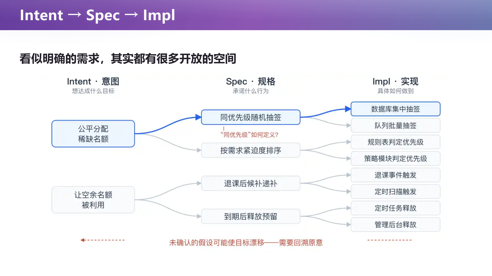
📷 Intent → Spec → Impl：看似明确的需求其实都有很多开放的空间
回到原视频 (00:00:19)
1.2 本质复杂性与附带复杂性
(参考时间: 00:03:01)
Brooks 说过：软件工程的本质就是驾驭复杂性。当你看过一份真实的需求规格说明书，你就会明白现实中的软件有多复杂。而这些复杂性里，有一部分是没办法消除的。
- 本质复杂性（essential complexity）：来自问题领域本身。选课就是这么复杂——要考虑课程容量、先修要求、时间冲突，还要排课、考虑教室，系统里老师和同学都能借教室。物理世界本身就是复杂的，而它在信息世界里的投影，这份复杂性没有办法被消除。
- 附带复杂性（accidental complexity）：来自我们选择的实现方式。用数据库还是文件系统、用哪种并发控制、在哪一层做数据转换——这些都是做技术选型时必然引入的 trade-off。业务规则没有变，换一种实现，就可能省掉一大批麻烦。
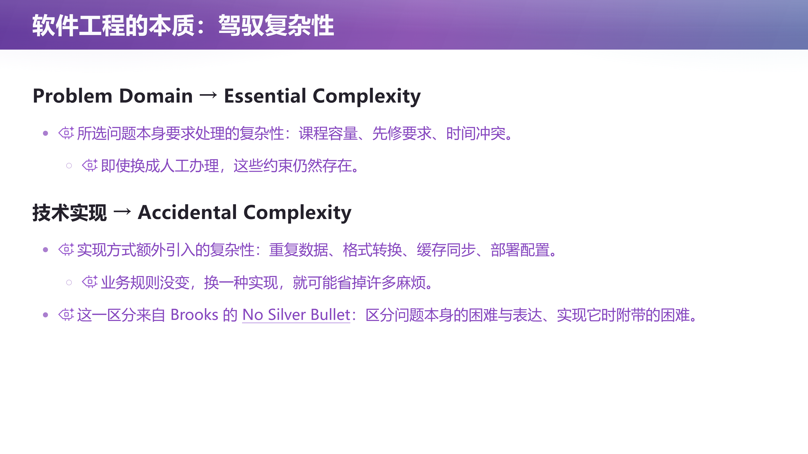
📷 软件工程的本质：驾驭复杂性
回到原视频 (00:03:03)
以一个很朴素的例子说明 trade-off：如果你想用文件系统来管理数据，写起来很方便、想 hack 它也很容易，但代价是性能可能远不如数据库，而且文件系统本身不提供事务、原子性与并发控制——它不能保证你读写多个数据时"看起来是原子的"。数据库能给你事务、备份、高可用这些承诺，代价就是你每次调试时都要经过一个中间层，不能像文件系统那样用各种 UNIX 工具随意组合它。
编者说明：Brooks 提出"essential / accidental complexity"的区分，原意是区分"问题本身的困难"与"表达、实现它时附带的困难"（No Silver Bullet，1986）。它并不是说附带复杂性不重要——恰恰相反，附带复杂性是我们通过架构可以主动减少的那一部分。
1.3 需求收缩 intent 空间，架构收缩 spec / impl 空间
(参考时间: 00:05:35)
Intent、spec、impl 之间不是一条唯一的翻译路径。"让学生方便地选课"可以对应先到先得、志愿排序、抽签等不同规约；即使选定一种规约，也还有许多数据结构、模块划分和交互方式可供选择。每一步都在作决定，每一个未经确认的决定都可能让结果逐渐偏离最初的意图。
两件事分别承担了收缩空间的工作：
- 需求工程直面本质复杂性，收缩 intent 空间的不确定性：把"我到底要什么"讲清楚。
- 架构设计分解本质复杂性、减少附带复杂性，收缩 specification 与 implementation 空间的可能性。
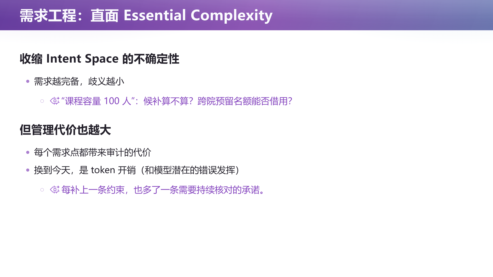
📷 需求工程：直面 essential complexity
回到原视频 (00:05:35)
需求工程有一个很容易被低估的代价。说"课程容量为 100 人"还远远不够——候补学生算不算？跨院预留名额能不能借用？特殊批准能不能突破上限？每补上一条约束，就减少了一点实现者自行猜测的空间，但也多了一条需要检查、维护、在需求变化时重新审视的承诺。到了生成式软件工程里，这些成本会具体地体现为上下文长度、token 开销，以及模型在复杂约束下出错的机会。
一个现场例子是"登录"。所有人都有用户名密码登录，于是我的软件也理所应当做一个——可你一旦开始想这件事，就掉进了泥潭：注册用户要保护密码，第一次要确认密码，用户一定会忘记密码，忘记密码要么发短信要么发邮件，发邮件又要考虑用什么发……仅仅登录这一件事，就有无穷的细节。最后很多人干脆选择微信、支付宝登录，把复杂度外包出去；但那又意味着要交钱、而且往往需要一个公司实体才能注册。需求层面的每一个选择，都会对未来产生很大的影响。
也正因为如此，需求阶段同时需要两种方向：
- 深度优先：先做一个 MVP，快速让你知道那些最重要的需求功能点到底有没有被满足、满足到什么程度，从而判断第一轮、第二轮要不要重做；
- 广度优先：登录方式、界面布局、首页怎么展现……这些分散在需求空间里的决策，没有哪个能靠"做深一个点"来替代。
这两者并不矛盾，但需要在它们之间达成一个比较好的平衡。这里没有特别的办法，只能说看得多、做得多。
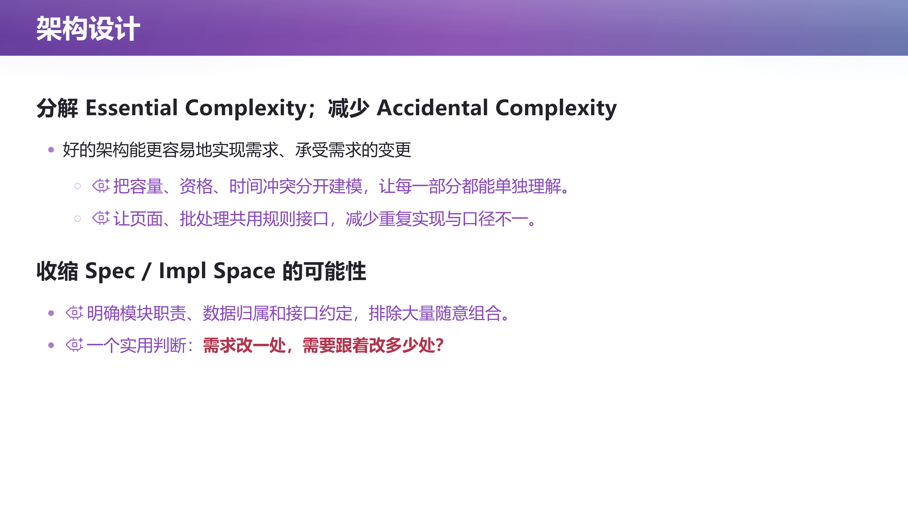
📷 架构设计：分解 essential complexity，减少 accidental complexity
回到原视频 (00:10:50)
架构设计这一侧的判断标准却很朴素：需求改了一处，系统里需要跟着改多少处？ 我们不能通过"分模块"让先修要求凭空消失，却可以把资格、容量、时间冲突分别建模，让学生选课、管理员补选和批量导入都调用相同的规则。模块职责、数据归属和接口一旦明确，规约与实现中大量随意组合的可能性就被排除了。
一个真实的、希望达成但尚未完全达成的例子，是学校的信息系统打通：学校花了很长时间完成统一身份认证的打通，但财务系统因为承载了大量领域知识（要把账做平、要接受审计）还没有和其他系统很好地连起来——数据共享、通知推送都还没有做到。"需求与架构能不能做到这一点"，本身就是架构要回答的问题。
2. 尊重自己的"小脑袋"
(参考时间: 00:14:17)
讲完"需求收缩 intent、架构收缩 spec/impl"，讲者坦言：
但还是觉得，不知道我说了什么。
于是他回去重读了一批老论文，发现一件很有意思的事：在软件工程诞生初期、甚至更早的时候，很多人已经认真思考过"程序应该怎样构造"。这些思考今天看来毫不过时，只是被埋在了快速发展的时代里。
2.1 用 AI 读一手经典：Structured Programming
(参考时间: 00:15:23)
讲者现场打开了 1972 年 Dahl、Dijkstra、Hoare 合著的《Structured Programming》。如果你第一次看到它，你会觉得"这不是一本现代意义上的软件工程书"——里面的程序在今天看来都很小，还有 Dijkstra 手绘式的流程图，讲顺序结构、选择结构、循环结构。他们当时还在争论：
- 我们其实不需要 goto；
- 用顺序、选择、循环这三种结构，就能表示任何程序逻辑。
📷 打开《Structured Programming》，看 Dijkstra 时代的流程图
回到原视频 (00:15:30)
他随即让 AI 帮忙："我想阅读《结构化程序设计》，先帮我总结一下全书。"
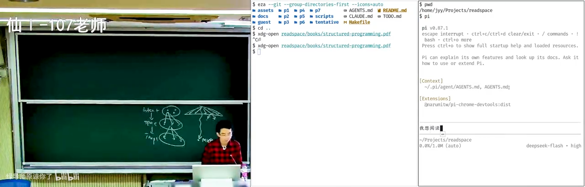
📷 让 AI 先总结整本书
回到原视频 (00:16:38)
这件事的意义不在于"AI 会总结"，而在于读书这件事本身变容易了。讲者给每一位博士生的建议都是：去读一些经典文献。他自己做操作系统、程序语言、软件工程相关的研究，会说这三个领域从 1980 年到 2010 年是一个 golden age——那之后做的东西越来越小、越来越窄，而在那个黄金时代，有很多天马行空的想法：在系统还不存在的时候，人们怎么把这些东西构建出来。
他做了一件事：让后台有一台云电脑的 agent 去收集 1980—2010 年值得读的系统文献，结果它每个领域找了两三百篇、总共上千篇。他基本都读过这些文献，仔细核对之后发现——这份列表相当好，其中很多正是他自己会推荐的文章。这件"非常恐怖"的事还带来了一个日常习惯：现在他开车时会打开 GPT 或 Claude，把一篇论文丢进去，一边开车一边聊——因为论文会被索引，AI 能看到全文。
那么怎么读一篇论文？讲者分享了他教过的方法：从你已经知道的知识开始，把领域不停往外扩张——
- 它要解决什么问题？
- 它用了一个你可能不知道的手段？
- 得到了什么样的结论？
- 把结论和你已有的全部知识连成一张网络。
连成网络之后，你才算真正理解了这篇论文。
2.2 On Our Inability to Do Much
(参考时间: 00:19:36)
Dijkstra 在全书第一部分开头就直言不讳：
I have a very small head and I had better learn to live with it, and to respect my limitations and give them full credit, rather than to try to ignore them.
（我的脑子很小，最好学会与它共处、尊重它的局限并正视它，而不是假装它不存在。）
用讲者的话说：我们人也是一个参数有限的"大模型"。程序规模增大，并不只是多写几遍同样的代码——能在脑中追踪十个状态，不意味着能用同样的办法追踪一万个状态。
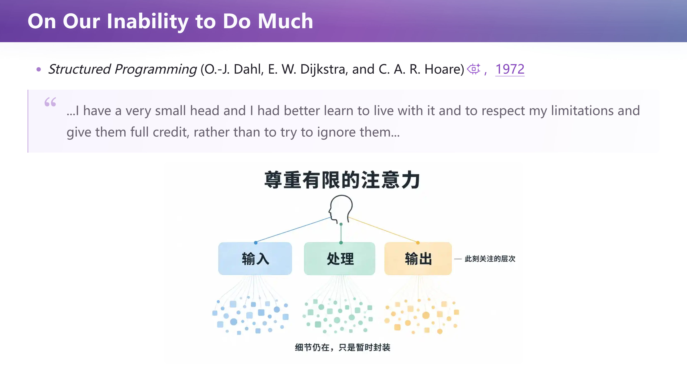
📷 On Our Inability to Do Much：我们是一个参数有限的"大模型"
回到原视频 (00:19:36)
所以关键手段就是抽象加上层次化的分解：把人不能一次理解的东西，变成人可以逐层理解的东西。你可能会觉得 "structured programming" 这个概念已经过时了——今天我们面向对象、用各种 fancy 的框架，前端用 React 和 Vue 的开发者至今还在"圣战"，就像当年 Vim 和 Emacs 的开发者一样（虽然这两批人也越来越像了）。但今天所有的这些东西，在过去其实已经被想过一遍：他们需要的就是用层次化的分解，把不能一次理解的东西变成可以逐层理解的东西。
2.3 三种思维辅助与"珍珠项链"
(参考时间: 00:20:56)
书的第一部分讨论了 our mental aids（我们的思维辅助）：枚举、归纳、抽象。
- 枚举帮助我们检查有限的分支；
- 归纳帮助我们理解循环与递归；
- 抽象则让我们使用一个操作时，只依赖它承诺的效果，不必每次重新展开内部过程。
书里的案例今天看来都是小程序，但它做了一个非常好的比喻：necklace（珍珠项链）。你要做一个程序、想象成做一个软件系统，其实是在做一条项链——项链上每一颗珍珠把它串起来，就得到一个软件。这个比喻讲的正是分解复杂性：把一个人类不能理解的东西，变成人类可以逐个理解的东西。
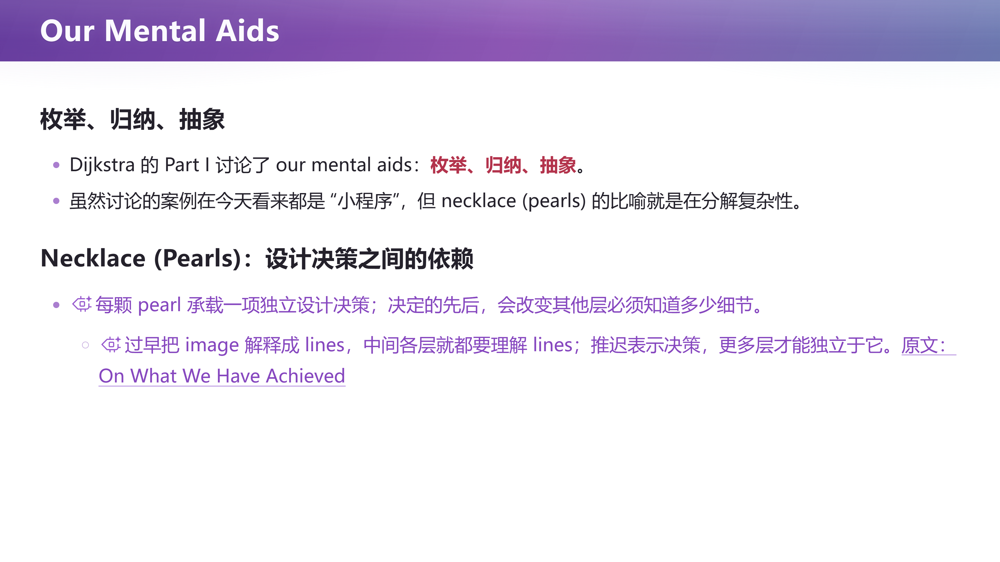
📷 Our Mental Aids：枚举、归纳、抽象，以及"珍珠项链"的比喻
回到原视频 (00:20:56)
更精确地说，每颗珍珠承载一项独立的设计决策，上层使用下层提供的概念。如果两种实现提供相同的接口，就有机会替换其中一颗，而保留其余部分。
重要的不只是切出了多少块，还包括决定的顺序：
- 例如，过早地把一幅图像解释成"一行一行"的表示，中间各层就都被迫理解"行"；
- 推迟这个表示决定，它们便能继续用"图像"思考。
表示细节传播得越远，修改时牵动的地方通常就越多。 这就是"决定的顺序也是设计的一部分"。
graph BT
P0["图像<br/>（推迟表示决定）"] --> P1["设计决策 A"]
P1 --> P2["设计决策 B"]
P2 --> P3["最终的一行行表示"]
P0 -. 若过早引入 .-> X["中间各层被迫都理解「行」"]
style P0 fill:#1f3a5f,stroke:#4a90d9,color:#e8f0fb
style X fill:#3d2f1f,stroke:#d9a44a,color:#fdf3e3
2.4 层次化程序结构：类、对象与协程
(参考时间: 00:22:57)
书的第三部分 "Hierarchical Program Structures" 把这些想法落实到 SIMULA 的语言机制里：
- 类描述一组相关对象的结构和行为，对象保存自己的状态。这样我们可以先用业务概念思考，再把概念逐层落到机器能够执行的操作上。对象抽象解决了"这一份数据和哪些操作属于同一个概念"的问题。
- 协程（coroutine）则帮助处理另一种耦合：几个程序片段之间，谁必须服从谁的控制流？
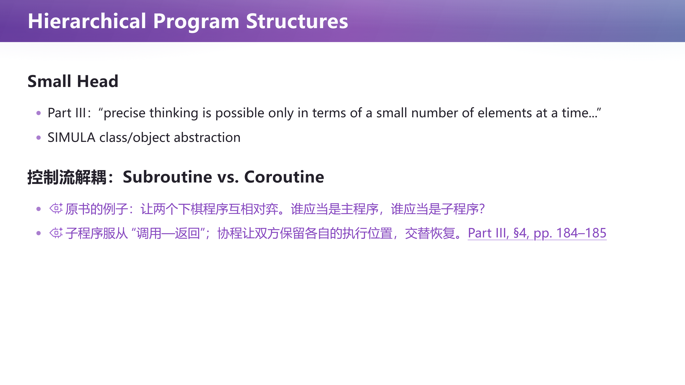
📷 Hierarchical Program Structures：类、对象与协程
回到原视频 (00:22:57)
子程序的基本关系是调用与返回：主程序调用它，它完成工作后返回。协程则可以在执行中暂停、保留自己的局部状态和执行位置，之后从暂停处恢复。书里用两个游戏程序互相对弈来说明这个区别：双方都要计算自己的下一步、交给对方、等待回应，再继续。强行把其中一方改成另一方的子程序，会让原本对等的合作关系变得别扭；把它们看作交替恢复的协程，就能保留双方各自的程序结构。
讲者用了一个日常类比来讲协程：想象线程就像人，共享内存就是物理空间——每个人有自己的记忆（我知道我做到哪一步了、今天要干什么、明天要干什么），但我们又在共享空间里合作完成一个任务；那么人和人之间的 communication 就成了一种协议。这样，你就可以把一份工作分解给若干条线，让它们通过某个数据结构共享、各自向前推进，再通过通信完成整个任务。
graph LR
subgraph SUB["子程序：调用—返回"]
M["主程序"] -->|调用| S["子程序"]
S -->|返回| M
end
subgraph COR["协程：交替恢复"]
A["下棋程序 A"] <-->|轮流走子 / 保留各自位置| B["下棋程序 B"]
end
style A fill:#1f3a5f,stroke:#4a90d9,color:#e8f0fb
style B fill:#1f3a5f,stroke:#4a90d9,color:#e8f0fb
一个值得注意的历史对照：今天"协程"更多是指为了性能而实现的轻量级线程（例如 Go 的协程模型），它让你像用线程一样用得开心，同时每次切换和 bookkeeping 的开销都非常小。但在那个年代几乎还没有成熟的线程模型——他们发明协程，本质上是在应对软件世界里的复杂性。
2.5 让 AI 带我们读"概念层次"
(参考时间: 00:24:40)
第三部分第七节 "Concept Hierarchies" 尤其值得顺着读一次。讲者的意思很明确：这本书对上课的本科生来说可能有点难，那就让 AI 带我们读——读原文、翻译、去掉你觉得不必要的部分，都是很好的做法。
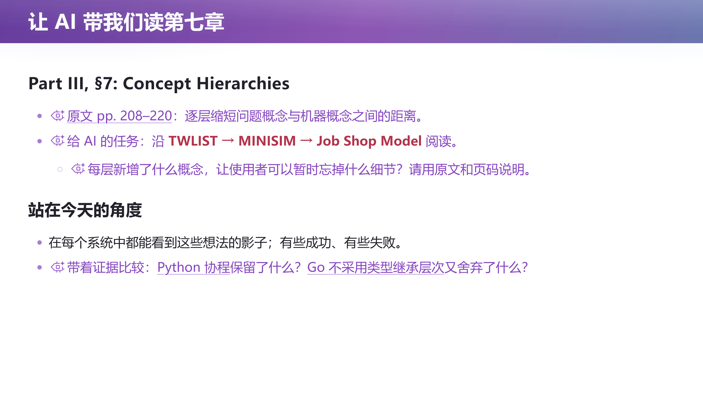
📷 让 AI 带我们读第三部分第七章
回到原视频 (00:24:40)
这条层次链是这样的：
- 先有
TWLIST提供双向链表操作； - 再在其上构造离散事件模拟机制
MINISIM； - 最后用这些机制描述车间里的订单和机器。
底层负责链表连接，中层负责模拟时间、等待和唤醒，上层则可以表达"请求一台机器，加工一段时间，再释放机器"。每向上一层，使用者就获得一套更贴近问题的词汇，也能暂时忘掉一批已经处理好的细节。
讲者把"抽象"落到了最朴素的一句话上：把数据加操作打包成一个概念，再用前缀机制把概念一层一层搭起来，这就是抽象。你做一个模块——不管它叫 class 还是 method——都需要把实现内部的复杂性隔离起来：比如"选课"或"上课"这件事，要和系统的其他部分（比如教室管理）在一定程度上隔离开；一间教室、一门课程之间怎么关联，要适当地分类。
有价值的提问应当落到原文上，而不是停在"这本书很经典"：
- 这一层新引入了什么概念？
- 调用者因此不再需要关心什么？
- 哪些操作会破坏底层的假设？
让 AI 指出对应代码和页码，再去核对原文，比让它泛泛概括有用得多。
一个精彩的插曲：用抽象来调动态规划。 讲者说，学生写的程序为什么烂？是因为一次要同时在脑子里的东西太多。 你们平时刷 OJ，最难的往往不是模拟题，而是需要一点数学性质、比如动态规划的题：样例、数据都对了还好；但如果一个一两百行的 DP 错了，你根本不知道怎么调。
原因在于：动态规划比其他程序更难分层。模拟题多多少少可以把几个大的部分分开、各自封装成一个 class、单独测试、单独调试，而且很容易把程序的中间状态映射到一个有物理含义、你能理解的状态上；而两三百行的 DP 是灾难，因为它中间是一个纯粹的数学表示——dp[i][j][k]，只要有一个地方转移弄错，整个就全错，而且它往往不 crash，只是算出一个错的值。
但这件事是可以扳回来的。当我们谈论 dp[i][j][k] 时，本质上是在一个优化问题、一个状态空间上做动态规划：它有无后效性，是一个有向无环图——这就是一层抽象。而在我们写 dp[i][j][k] 的时候，其实把这层抽象扔掉了：思考问题时工作在这个抽象层级上，写代码时却把它丢掉了。
所以你可以反过来做：把"状态"这个概念放回来——知道 dp[i][j][k] 到底代表什么含义，把它可视化，把这些关联的状态和迁移打印出来，甚至实现一个 get(i, j, k) 返回所有可能的状态迁移。做完这层抽象，这个程序就能调试了；调完之后，再把它改写成等价的、更高效的形式。
同样的思路也适用于模拟并行：你可以强行直接模拟一个状态机，也可以做出一个协程的抽象（hold、wait、activate、simulate）——一个合适的抽象，让你可以"模拟时间"，这和直接上手写一个模拟是很不一样的。
讲者还提到一个很有意思的用法：跟 GPT 开语音对话，让它"给我想一个符合现代软件前端的例子"，它竟然找到了 React scheduler 与 Fiber 架构的对应。再上升一步——如果不想谈具体例子、只想知道"抽象的想法有哪些"，可以打开 web search，让 GPT 去调研上千篇论文，在其中挑出最好的：它找回来的是 UNIX、关系数据库、Internet、TCP/IP，是 interface、trade、protocol——它们都在告诉你：要做一个好的抽象。
而这些例子，今天正好都要讲。
3. 好的架构，设计的是一片解空间
3.1 阅读经典（1990s）：名字、联想与品味
(参考时间: 00:34:16)
1972 年的书读完了，讲者又想：如果到 1980、1990 年代，我们又怎么来看这件事？于是他找到了一个很有意思的演讲。
Guy L. Steele Jr. 是 Scheme 的设计者（与 Gerald Jay Sussman 共同设计），也是 Common Lisp: The Language 的作者、Java 语言规范的合著者。他在 SICP 的前言里写道：
One thing the human mind seems to do well is to name things; we have powerful associative memories. Given a name, we can quickly recall some associated thing to mind.
（人类大脑很擅长的一件事就是给东西命名；我们有强大的联想记忆。给一个名字，我们就能迅速想起与之关联的东西。）
也就是说，一个好名字可以承载已经理解过的知识：程序员于是可以用"事务""队列""选课资格"思考，而不必每次都回到它们的全部实现细节。
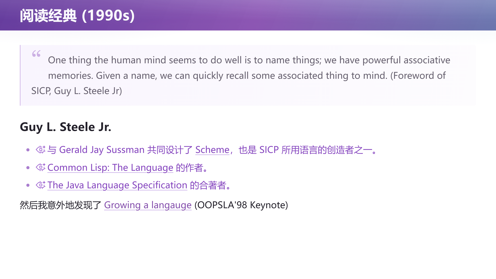
📷 阅读经典（1990s）：从名字与联想记忆开始
回到原视频 (00:34:16)
Steele 本人在 1998 年的 OOPSLA 主题演讲 "Growing a Language" 中，把这种"命名与生长"变成了一场表演。
3.2 Growing a Language：出路不是二选一，而是生长
(参考时间: 00:35:23)
讲者现场打开了这篇演讲的 PDF。
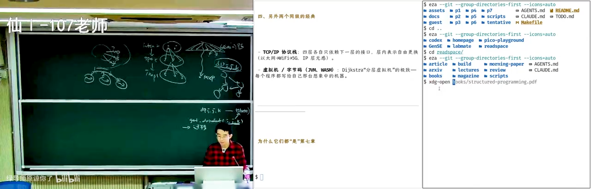
📷 打开 Growing a Language 原文
回到原视频 (00:35:23)
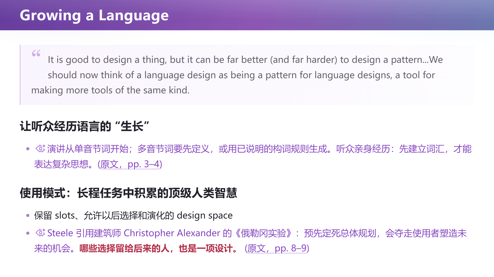
📷 Growing a Language：让听众亲身经历一次语言的"生长"
回到原视频 (00:35:40)
第一次看到它，你会想："这是什么呢？"——因为它的开头是这样一句话：
Most of the time I do not read my talks...
你会觉得没读懂，往后翻一页，看到一大堆字、十几页，然后很可能就把它关掉了。但讲者说：这个 talk 非常非常有趣，它是一个表演性的演讲。
📷 全篇只用单音节词的开场白
回到原视频 (00:36:04)
Steele 的规则是：全篇尽量只用单音节的英文词，凡是遇到双音节以上的词（比如 woman、machine、vocabulary、programming、computer），必须当场定义。就像写一首藏头诗——他做了一件非常炫技的事。
但这件事恰恰暴露了编程语言的根本困境。 所有编程语言相对于英语、相对于用户需求，都是很小的。因为编程语言需要一套形式语义（formal semantics）；如果语言里可以随便出现 "woman" 这种无法形式化的概念，你就定义不出它的语义。而只有有形式语义的东西，才能在计算机上执行。所以编程语言相对来说都比较小。
于是就有了两难：
- 如果你把语言设计得极小——比如 Brainfuck 那样几乎就是个图灵机——它满足"最小"，但人类完全不可读、无法实际使用；
- 如果语言可用——比如 C——那它是一门设计得很经典的语言，但它也带来很多设计上的问题：比如它没有运算符重载，你要表达"往队列里放东西"就是一件很恐怖的事；比如 qsort 的 API 设计得相当糟糕，为了比较要传一个
int (*)(const void *, const void *)，还要额外传nmemb和size两个参数。
根本矛盾在于：
- 小的语言好移植、好用，但满足不了各种各样膨胀的需求；
- 一次设计好的大语言体量大、交付慢，会在成功之前先被某一个小而丑的语言取代。
C 就是典型的成功者——很大程度上因为它直接和机器一一对应、没有额外的抽象，所以几乎可以被移植到任何地方。
那么出路是什么？Steele 的答案不是二选一，而是——生长（growth）。 你不需要一开始就设计一门完满的大语言，而应该设计一个能够生长的架构。这和需求又是相通的：一个好的软件设计，能够抵抗需求的变更；当世界发生变化时，如果你只是针对现在设计、没有考虑软件应该怎样生长，它就可能陷入技术债的泥潭。
Steele 举了一些语言生长的例子：从 C 到 C++ 是一种生长（尽管他"觉得 C++ 长得并不好"）——比如模板是一个非常重要的架构，但在 C++11/14/17 之前被滥用到了 Boost 里那些没人看得懂的程度；它也是一个很好的机制，只是"长出了一些比较奇怪的东西"。他也给 Java 提了建议，主张只加三样东西：泛型（很重要，没有泛型你构造抽象时就像 C 或早期 Java 那样到处强制类型转换）、运算符重载（Java 至今没加）、轻量用户自定义类（现在有了）。
这场演讲是一条关于 growability（可生长性）的架构哲学：
扩展必须是一等公民，而且扩展之间可以组合——这才是一个可生长的架构。
它不是"我有一个需求清单，把清单全部实现就叫正确"。讲者顺势吐槽了一句 OJ：从你们进大学开始就疯狂地做各种各样的 OJ 题，它把你们训练成了解题的机器——因为做 OJ 是不需要任何扩展的：这个题对了，这段代码用后即扔，不需要维护。久而久之，你就会有一种不自觉的、"用户集扔去走"的倾向，对"扩展"这方面的思考就变少了。而这门课，某种程度上会把它拉回来一点。
graph LR
R["需求 / 世界<br/>持续变化"] --> G{"架构"}
G -->|错误答案：一次设计完满的大系统| F["体量大、交付慢<br/>成功前被取代"]
G -->|错误答案：极小但不可用| M["小、好移植<br/>满足不了膨胀的需求"]
G -->|正解：可生长| S["固定协作规则<br/>把扩展作为一等公民<br/>让扩展之间可以组合"]
style S fill:#1f3a5f,stroke:#4a90d9,color:#e8f0fb
style F fill:#3d2f1f,stroke:#d9a44a,color:#fdf3e3
style M fill:#3d2f1f,stroke:#d9a44a,color:#fdf3e3
3.3 好的架构设计的是解空间
(参考时间: 00:42:29)
把 Growing a Language 的思想放回软件架构，就得到本讲的核心观点：
好的架构不是选出一个解，而是设计开放需求空间所对应的一片解空间。
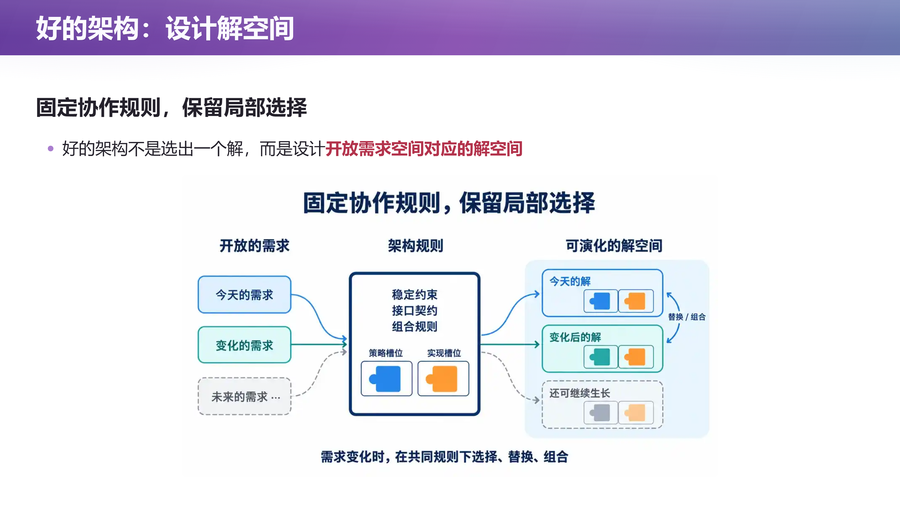
📷 好的架构：设计解空间
回到原视频 (00:42:29)
一场演讲里，每个同学问出的问题不一样，得到的结果也不一样——完全取决于你的提示词和想象力能到什么程度。但方向是清楚的：
- 今天可以确定数据交换的规则，未来仍然允许增加新的处理步骤；
- 今天可以确定业务对象的接口，未来仍然允许更换实现。
我们不可能提前猜中所有需求，但可以让一类未来变化有合理的落脚点。固定协作规则、保留局部选择——这就是"设计解空间"。
3.4 阅读经典，建立品味：一个"大学毁灭计划"
(参考时间: 00:47:25)
讲者留下一个很重的 comment：
有太多宝藏被"埋在"这个快速发展的时代里了。
海量的人类 slop 和 AI slop——比如 CSDN 上的东西、"防自学教科书"——正在疯狂污染大家的品味。阅读经典是成长必备的道路。
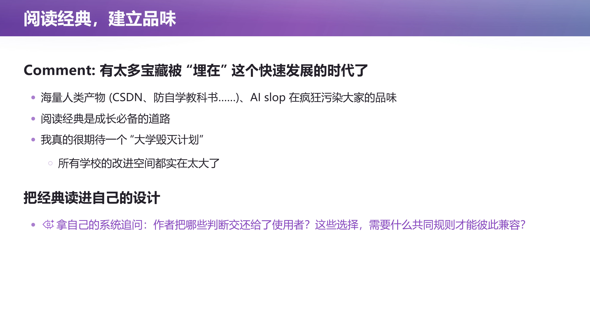
📷 阅读经典，建立品味
回到原视频 (00:47:25)
他半开玩笑地说"我真的很期待一个大学毁灭计划"：所有学校的改进空间都实在太大了。他的构想是——能不能把大一第一门程序语言课的知识点全部拆散，不用一本教科书（甚至是老师自己写的教科书），而是把 1970、1980、1990 年代的经典原样 break down、重新串联起来，为你生成一本教材。在 AI 的帮助下，今天每个人都有机会原汁原味地了解作者想要传达的原始想法。
落到实操上，就是把经典读进自己的设计：拿你自己的系统追问——作者把哪些判断交还给了使用者？这些选择，需要什么共同规则才能彼此兼容？
4. UNIX：组合规则比现成用途更有力量
(参考时间: 00:49:21)
有了"设计解空间"这把尺子，就可以去看案例了。第一个案例，当然是大名鼎鼎的 UNIX 哲学。
4.1 三条原则，精髓在第三条
(参考时间: 00:49:37)
UNIX 哲学常被概括为三句话：
- Do one thing and do it well.（每个程序做好一件事。）
- Write programs to work together.（让程序能够协作。）
- Write programs to handle text streams, because that is a universal interface.（让程序处理文本流，因为文本是一种通用接口。）
前两条容易赞同，真正让它们落地的关键往往是第三条。因为文本接口统一了人和程序、程序和程序的接口：
- 如果接口只是二进制的字节流，那对人来说是很不友好的；
- 而文本流让一个工具的输出，既可以直接显示给人看，也可以保存到文件，或交给下一个工具。
讲者用"用数据库"的感受来解释这一点：你知道数据库好，但用数据库的时候总觉得隔了一层纱——因为你每次查询任何东西都需要一个 SQL query，而这个 query 对人是间接的（indirect），你想要的却是一个立即的东西。人并不是很适应"做任何事都要加一层 indirection"。当然模型可以遵循这种指令（你甚至可以让它每说一句都加一个"喵"），但让人来遵循就会非常痛苦。
而这个想法，早在 1964 年就已经被提出来了：McIlroy 提出，要像连接花园水管一样连接程序。UNIX 在 1983 年前后引入了管道，但"把程序当作可连接的部件"这个想法，在更早的时候就已经有了。
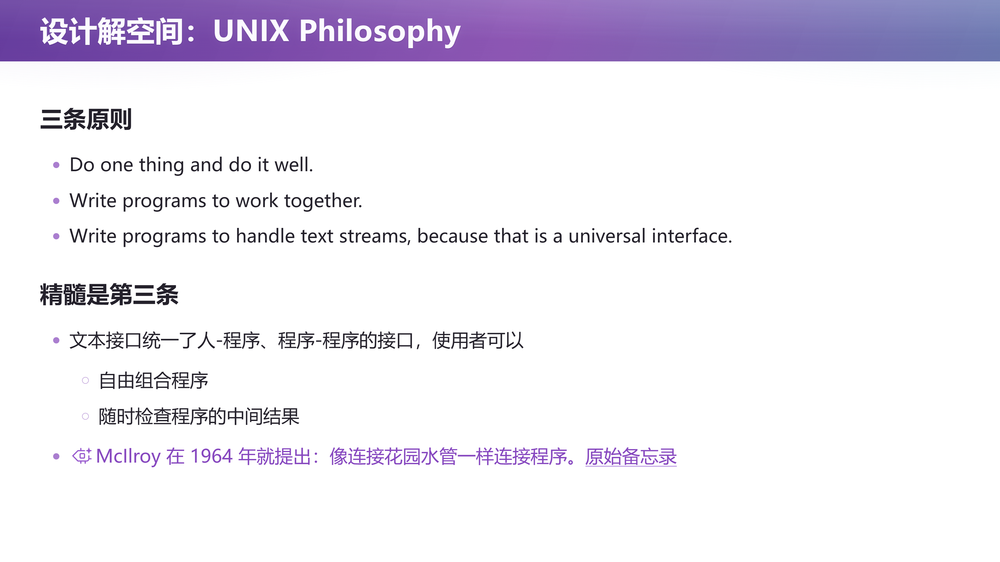
📷 设计解空间：UNIX Philosophy
回到原视频 (00:49:37)
graph LR
A["工具 A<br/>do one thing well"] -->|stdout| PIPE["|"]
PIPE --> B["工具 B<br/>do one thing well"]
B -->|stdout| PIPE2["|"]
PIPE2 --> C["工具 C"]
U["人"] -. 也能读懂文本 .-> PIPE
style PIPE fill:#1f3a5f,stroke:#4a90d9,color:#e8f0fb
style PIPE2 fill:#1f3a5f,stroke:#4a90d9,color:#e8f0fb
4.2 组合需要共同约定：POSIX
(参考时间: 00:51:31)
不过，"都是文本"还不足以保证协作。UNIX 依靠的是一整套语言和约定——讲者也提到那篇著名的 "UNIX Hater's Guide"，它各种吐槽 UNIX 里设计得不好的地方；但只要有一套统一的标准，人和工具就都好理解：
- 命令行参数：短选项、选项参数、操作数；用
--结束选项解析（个别工具有历史例外）。 - 数据与诊断分开：
stdin输入、stdout输出、stderr诊断；Shell 的管道默认把前一个程序的标准输出连接到后一个程序的标准输入。 - 退出状态单独传递：
0通常表示成功，其他值按工具约定解释；例如grep的1表示未匹配。
📷 UNIX：组合需要共同约定
回到原视频 (00:51:31)
长期的社区实践还形成了一些很有用的习惯，让文本成为稳定的数据接口：
- 简单记录常用"一行一条"、固定字段；复杂结构用 TSV、JSON 等明确格式；
- 机器模式保持稳定：彩色、进度条、提示语不要混进数据流；
- 分隔符也是协议：文件名可以包含换行，所以"按行切开"并不总能无歧义地还原文件列表——这时可以用 NUL 分隔；
- 排序、字符分类会受 locale 影响；需要可复现规则时可以固定
LC_ALL=C。
当 sed、awk 这类工具奠定了几套约定之后，其他程序的输出也开始朝着同时对人和对工具友好的方向发展。再加上管道和退出状态——这几点合起来，就是一个非常棒的机制。正如讲者总结的：这些看起来琐碎的约定，正是在保护组合的可靠性。
4.3 使用者创造新的用途
(参考时间: 00:52:55)
讲者用一个非常具体的例子说明什么叫"组合性"："打开文件"这个菜单。
在一个 GUI 程序里，需要一个"打开文件"的菜单。它要么自己实现一个（比如 Adobe 全家桶里的打开对话框，会提供预览之类的功能，好用的时候挺好用，不符合你习惯的时候很难用），要么用操作系统的（虽然集成了绝大部分常用功能，但也不一定好用）。如果你对这两个都不满意，你有办法吗？——没有办法。
但在 UNIX 里，答案不一样。你想给 Vim 或 Emacs（"我们不胜战"）、或者 Nano / Neovim 配一个自己想要的菜单，就可以配一个自己的菜单。因为你手上有一整套可以组合的小工具。
📷 自己组合出来的"打开文件"菜单
回到原视频 (00:53:47)
于是就有了这些现代工具继续扩展组合边界的例子：
- jq：把 JSON 中需要的字段提取成文本流，API 响应也能进入流水线；
- fzf：从标准输入读取候选项，让人选择，再把结果写回标准输出；
- xdotool：把窗口搜索、键盘和鼠标操作变成命令（适用于 X11）。
于是"书目 JSON → jq 提取书名 → fzf 人工选择"可以成为一条流水线——人的判断也变成了可组合的一步；"窗口 ID 列表 → fzf 选择 → xdotool windowactivate"就组合出了你自己的窗口切换器。
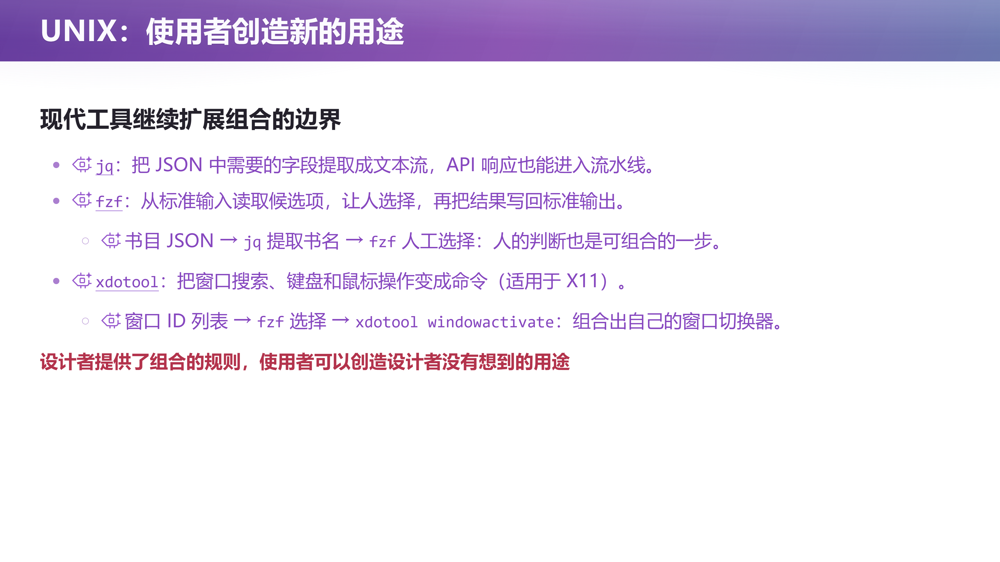
📷 UNIX：使用者创造新的用途
回到原视频 (00:52:55)
设计者提供了组合的规则，使用者可以创造设计者没有想到的用途。 讲者说：我上操作系统课的时候经常讲——你们在用 Linux / UNIX 的那一刻起，每个人都是程序员。因为你敲下的每一个命令都是一个小程序，而这个小程序负责把各种"做好一件事"的工具组合起来。这种可组合性非常关键——一直到今天，你都很难在一个 GUI 程序里得到这样的组合性，而这样的 ground-breaking 东西应该是可以做得出来的。
5. 关系数据库：分开"理解数据"与"存放数据"
(参考时间: 00:55:01)
第二个案例，是大家很熟悉的关系数据库。
5.1 Codd 1970：把物理世界的状态投射到关系上
(参考时间: 00:55:07)
Codd 在 1970 年的论文里写道：
A relational model of data as a basis for protecting users of formatted data systems from the potentially disruptive changes in data representation caused by growth in the data bank and changes in traffic.
（用关系模型作为基础，保护格式化数据系统的用户，使他们不必因为数据量增长、访问模式变化所带来的数据表示方式的破坏性变化而受累。）
讲者用自己的话解释这个抽象：如果你用文件系统去管理数据，你面对的其实是一个 raw interface。
- 好处是 UNIX 世界里的工具可以复用；
- 坏处是你"太过自由"，以至于没有统一的管理。
而关系代数做了一个非常了不起的对世界的建模：现实世界里的数据，可以用一堆二维表、以及表和表之间的操作来表示。你几乎可以用表与表之间的 join 之类的操作，去处理任何你需要的数据管理；至于数据怎么存、可靠不可靠，全部交给底下的数据库系统去实现。
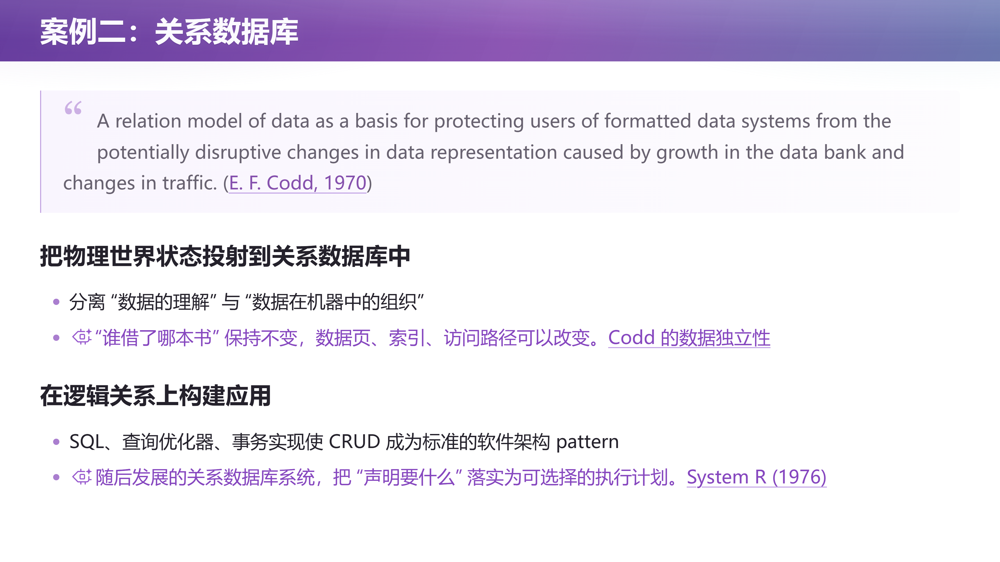
📷 案例二：关系数据库
回到原视频 (00:55:01)
于是在关系代数的基础上，我们有了 SQL——一门结构化的查询语言。注意，这也是一门语言：unix shell / bash 是一门语言，SQL 也是一门语言。讲者由此提炼出一条规律：
当一个东西能够 grow 的时候，它多多少少都会带上一套语义、一个接口；而只要这个接口足够灵活，它就会像一门编程语言。
有了 SQL，再有了查询优化器和事务以后，数据库在任何时刻都相当于当前世界的一个状态；经过一次 database transaction，它会到下一个状态。数据库还可以有视图（view）——当前状态可以用一个查询创建一个"我对当前世界的理解"的切片。
5.2 现实、关系与存储
(参考时间: 00:56:20)
以图书馆为例，现实里发生了"某位读者借走某册书"。系统可以用读者、馆藏和借阅关系表达这个事实。我们既可以问某位读者借了哪些书，也可以问某册书被谁借走；这些问题都建立在同一组逻辑关系上。底层究竟采用哪种索引、记录放在哪个数据页、执行查询时先扫描哪张表，则属于另一个层次。
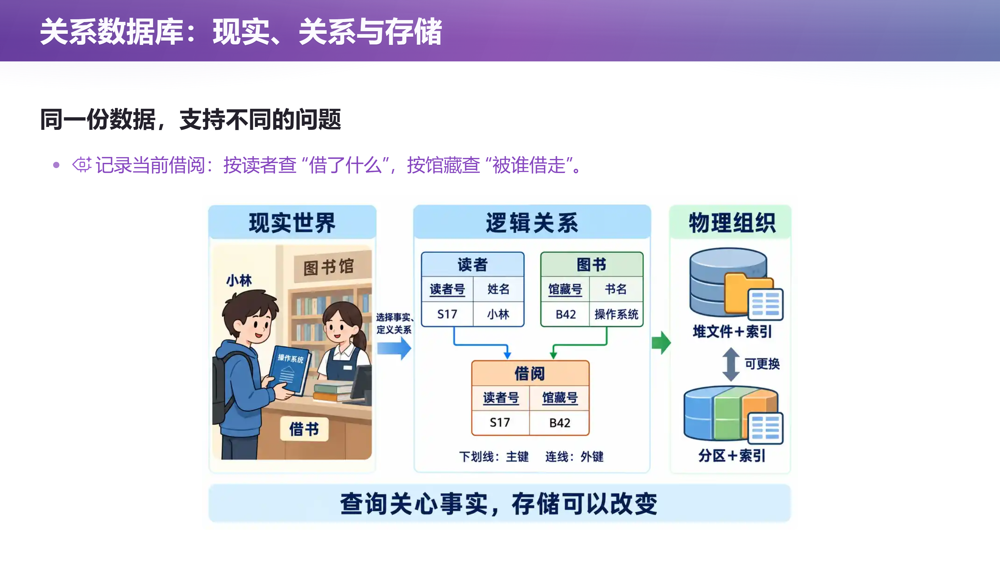
📷 关系数据库：现实、关系与存储
回到原视频 (00:56:20)
这里同样存在开放空间：数据库设计者没有提前列出全世界的图书馆报表、商城查询和教务统计，却提供了表达关系、约束和查询的规则。用户可以在其上提出新的问题，底层也可以改进存储与执行方式。逻辑关系稳定下来，双方就获得了一定程度的独立演化能力。
而这套抽象带来的影响是历史性的：数据库系统的实现给了我们近乎无限 scale 的能力——到今天，SQL 的数据依然可以近乎无限地扩展。于是数据库带起了整个人类世界信息化的浪潮：
- 图书馆里的书可以信息化；
- 学籍管理系统可以信息化；
- 财务信息可以信息化；
- 在线商城的订单可以信息化……
一切都可以用 relational database 来表示，因为它表达的是实体与实体之间的逻辑关系。只要把逻辑关系理清楚，你就能在现实世界里实现信息系统。这也是一个非常顶级的、隔离了复杂性的抽象：它只规定"我的世界里有哪些表、schema 是什么"，而 schema 具体是什么、怎么扩展，由你来为你的应用定制。
graph TD
W["物理世界<br/>某位读者借走某册书"] --> L["逻辑关系<br/>读者 · 馆藏 · 借阅"]
L --> Q1["按读者查：他借了什么"]
L --> Q2["按馆藏查：被谁借走"]
L --> SQL["SQL 声明式查询"]
SQL --> OPT["查询优化器<br/>选择执行计划"]
SQL --> TX["事务<br/>组织需要整体处理的读写"]
L --> ST["存储 · 索引 · 数据页<br/>（可独立改进）"]
style L fill:#1f3a5f,stroke:#4a90d9,color:#e8f0fb
style ST fill:#3d2f1f,stroke:#d9a44a,color:#fdf3e3
6. Internet：在持续变化中保持协作
(参考时间: 00:58:29)
第三个案例，是 Internet。
6.1 分层与 TCP/IP
(参考时间: 00:58:29)
Internet 解决一个非常简单的问题：把整个世界连起来。 讲者现场举的例子就是自己：我今天为什么可以站在那上课，同时还推着流，我的手机还能同时看推流的结果和弹幕？ 因为 Internet 把整个世界连起来了。
它也是一个可以成长的架构。当你用 TCP 的时候，你再也不用担心这个数据传输到底可靠不可靠——无论什么样的数据流，都可以稳定可靠地从一个点送到另一个点，从我的手机，到世界上另外一头的某一个点。
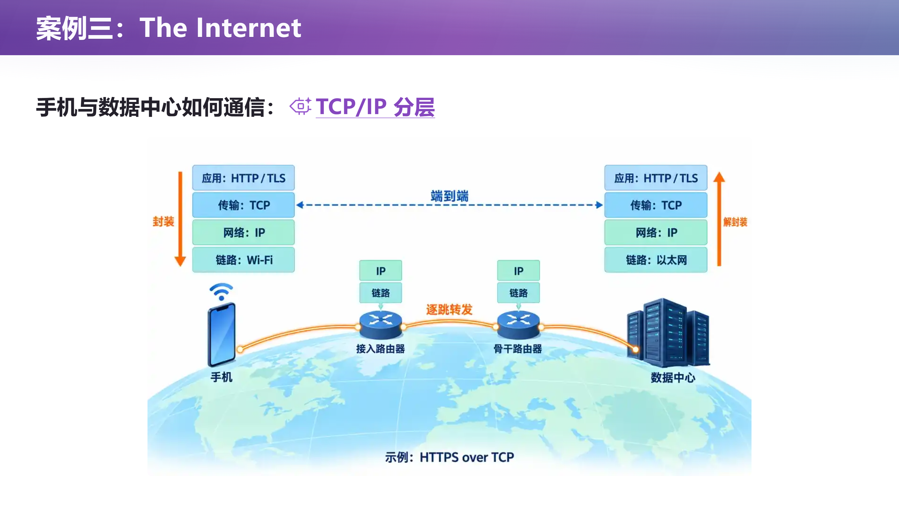
📷 案例三：The Internet
回到原视频 (00:58:29)
以手机通过 TCP 访问 HTTPS 服务为例：应用提出请求，安全与传输协议处理相应的数据，IP 层组织跨网络传递，链路层负责相邻设备之间的传送；请求经过多个网络到达数据中心，接收端再逐层处理。应用不必知道途中每一段链路使用什么硬件，也不必为每一次物理路径变化重新设计业务逻辑。
它的设计哲学是：我负责解决系统里的一部分问题，不预设上面跑什么应用。 网络只管高效地传 datagram，至于上面跑什么样的应用程序，"能支持什么就支持什么，不要做预设"。
6.2 唯一永存的原则是变化本身
(参考时间: 00:59:40)
RFC 1958《Architectural Principles of the Internet》（1996 年 6 月）开篇就强调：
In searching for Internet architectural principles, we must remember that technical change is continuous in the information technology industry.
（在寻找 Internet 的架构原则时，我们必须记住：信息技术产业中的技术变化是持续不断的。）
文中用城市作类比：街道和建筑不断改建，城市仍然继续运转。 共同的协作规则，使局部替换和整体延续能够同时发生。
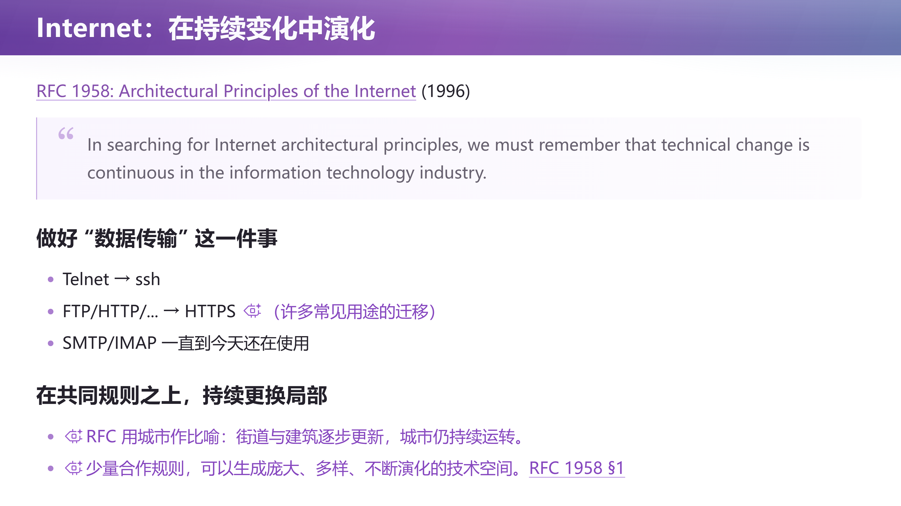
📷 Internet：在持续变化中演化
回到原视频 (00:59:40)
唯一应该永存的原则，就是变化本身。 所以 Internet 只做一件事——networking，目标就是 connectivity；在 connectivity 的基础上，上面会爆发式地长出很多应用。当然，为了把这一件事做好，架构里必须包含一些很硬的设计细节，比如 TCP 的拥塞控制（congestion control） 这类难题，以及连接管理（连接的中断在什么时候就该被判定为中断）。
在这个基础上，上面的世界变了很多：
- 远程登录从 Telnet → SSH（当年在 HTTP 上"裸奔"、用 telnet 连 BBS 灌水的日子，显然达不到今天的安全要求）；
- 文件传输与信息访问从 FTP / HTTP → HTTPS（当年 FTP 好，是因为协议本身就支持断点续传，在校内下电影下得很开心；但今天它因为没有安全等等而显得过时）；
- 电子邮件则延续了 SMTP、IMAP 等协议体系，一直到今天还在使用。
这里的"做好数据传输这一件事"，是说基础设施应提供足够通用的通信抽象，让上层应用有自己的演化空间。今天你访问所有微服务、只要出了本地、连到 Internet 上另一个服务商，全都是 HTTPS——HTTPS 又变成了 TCP/IP 上面的一层；它还有 RESTful API 这样的规范（当然只是建议，你可以不严格遵循）。在共同的规则之上，持续更换局部——就像一个城市建好了交通网络，建筑就可以不断向前演进。
6.3 Systems：每一轮浪潮的新抽象
(参考时间: 01:03:40)
UNIX、关系数据库和 Internet 都属于 Systems——是为支撑通用应用而做的抽象层。正因为要支撑通用应用，它们的抽象必须做得特别好，才能在很长的演化里存活下来：
- IBM 360（一个非常经典的系统）；
- UNIX；
- 面向对象的编程语言；
- Internet；
- Android（讲者有一讲会专门讲它）；
- Kubernetes（云原生）。
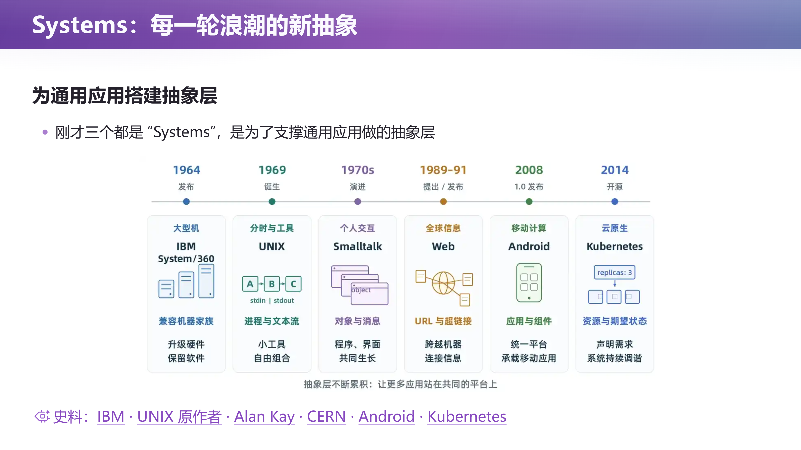
📷 Systems：每一轮浪潮的新抽象
回到原视频 (01:03:40)
那为什么要在大学里学这些课程？当然你要学一些具体的技术——有一天你真会出去写 SQL，真拖网的时候真的需要一个 SQL 的时候，你得有概念才能写出来。但另一方面，你更多的是看到这些沉淀下来的经典，它为什么能成为经典：这些偏软件架构的系统，是怎么样应对变化的；你可以体会，为什么一个好的设计能够支撑起一个生态、应对这些变化。
7. 从"一个页面一段 SQL"到 MVC
(参考时间: 01:04:16)
前面三个案例都是 Systems——为通用应用搭好的抽象层。现在把视线从基础设施移到具体客户的软件：操作系统、CRUD 数据库、Internet 这三块地基都打好了，各种业务逻辑系统（教务系统、图书管理系统）就全部可以上线了。那在这个已经打好的抽象层基础上，我们能做什么呢？
7.1 每个页面就是一个 SQL transaction
(参考时间: 01:04:49)
你很自然的一个想法是：把每一个页面、每一个功能，都做成一个 SQL transaction。
数据库已经完成了物理世界在信息世界里的投影——它就是一堆表的分解；数据库的事务驱动着状态的变化。把你回到 1998 年或 2000 年，要给学校或企业设计软件系统，手上只有 OS、数据库和 Internet，最直接的架构就是：每个需求点 → 一个数据库事务；当前状态 → 用各种各样的数据库视图去呈现。
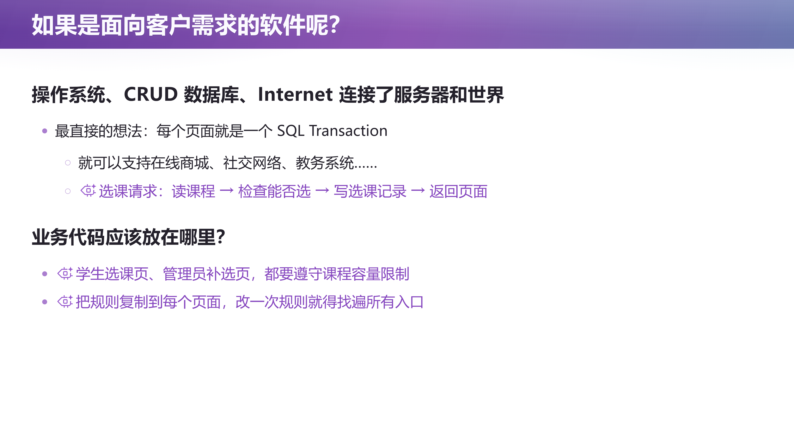
📷 如果是面向客户需求的软件呢？
回到原视频 (01:04:16)
比如一个选课请求：
- 读课程信息；
- 检查能否选；
- 写选课记录；
- 返回页面。
比如你想看"有哪些学生选了这门生成式软件工程课"，就写一个 SELECT——数据库视图在某种程度上就是一个切片，拿出来显示在某个地方。
看懂这一点，你就能理解为什么那些软件工程的书要那样写：软件工程做的事，或者说你构建业务系统做的事，就是把需求投射成一个个数据库事务和视图。当每个需求点都是一个数据库事务 + 查询的时候，这个架构其实是非常好的——它直接催生了一波应用的浪潮。
graph LR
REQ["用户请求<br/>页面 / 功能"] --> TX["一个 SQL transaction<br/>读课程 → 检查 → 写入 → 返回"]
TX --> ST[("数据库当前状态")]
ST --> VIEW["查询 / 视图<br/>对当前世界的切片"]
VIEW --> REQ
style TX fill:#1f3a5f,stroke:#4a90d9,color:#e8f0fb
但业务代码应该放在哪里？ 学生选课页、管理员补选页都要遵守课程容量限制；如果你把规则复制到每个页面，那么改一次规则就得找遍所有入口，漏掉一个，页面看起来都正常，业务却开始自相矛盾。
7.2 Java Web：直接在 HTML 里写代码
(参考时间: 01:07:16)
20 世纪 90 年代后期的 Java Web 浪潮让这类应用开发变得普及。虚拟机提供了跨平台的运行基础，自动内存管理解救了许多需要手工管理内存的程序员。当然，部署配置又贡献了新的复杂性，于是 "Write once, run anywhere" 也被调侃成了 "Write once, configure everywhere"。
页面生成还有一个很实际的问题：如果在 Java 代码里一行行输出 HTML，页面结构很快就会淹没在字符串拼接里。 于是有了模板语言：
- PHP/FI 的前身（1995）、ASP（1996）已经探索了在页面里嵌入服务器端脚本；
- Servlet：在 Java 中输出 HTML；
- JSP 1.0（1999）：反过来，在 HTML 中嵌入 Java，由容器把页面翻译成 Servlet 执行。
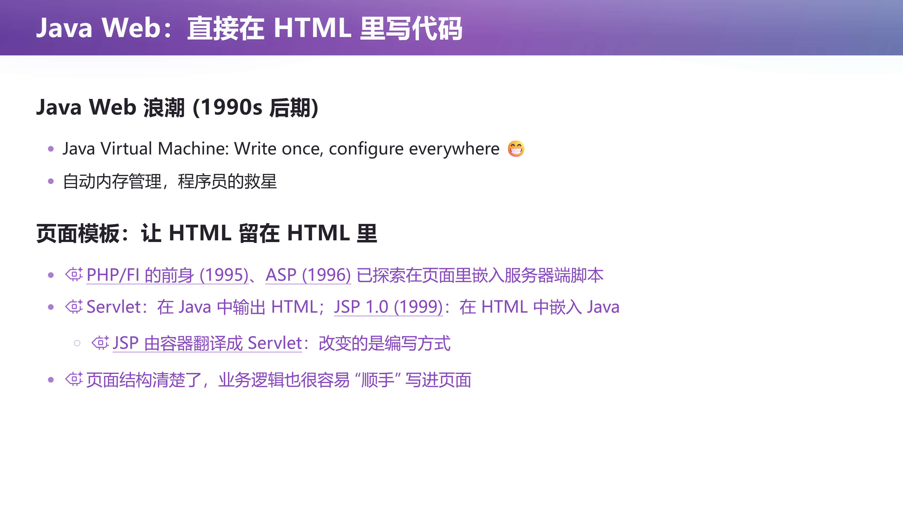
📷 Java Web：直接在 HTML 里写代码
回到原视频 (01:07:16)
讲者特别用"拼 prompt"打了个比方：如果你要定制一个 prompt，别用 A + B + C 这样拼字符串：
<不好的写法>
prompt = system_prompt + "
" + user_input + "
" + ...
<更好的写法：用一个模板语言>
你是一个 {{ role }}。
指令：{{ instructions }}
今天的日期：{{ date }}
模板语言的好处是可扩展、可维护：它本身有一套语义，渲染时你传入 instructions、date 这些变量，它会把对应内容贴到位置上。"在页面里嵌入服务端脚本"这个 feature，最早在 PHP / ASP 时代就已被探索；到今天你用的 Jinja 之类的模板引擎，本质上是同一个想法。有了这个功能，开发以数据库为中心的应用就变得前所未有的容易：一个页面一个 database transaction，把数据捞出来放进 list / map，再把它投射成一个 HTML 页面。HTML 里还有一个很好的设计：它把 DOM 的"数据"和"样式"分开了（CSS 与 HTML），于是你可以给不同的 element 加不同样式，几乎排出任何形式的界面——图书管理系统就是在那个时候集中爆发的。
7.3 JSP：从 Java 片段到表达式与标签
(参考时间: 01:08:41)
同一张 JSP 页面，有"两代写法"：
- 早期：
<% ... %>执行 Java、<%= ... %>输出表达式； - 后来：JSTL 1.0（2002）提供标准标签与 EL；JSP 2.0（2003）把 EL 纳入页面语言。
<%@ page contentType="text/html;charset=UTF-8" %>
<%@ taglib prefix="c" uri="http://java.sun.com/jsp/jstl/core" %>
<html><body>
<% String msg = "Hello, JSP!"; %> <!-- Scriptlet -->
<h1><%= msg %></h1>
<ul>
<c:forEach var="user" items="${users}"> <!-- JSTL + EL -->
<li>${user.name}</li>
</c:forEach>
</ul>
</body></html>
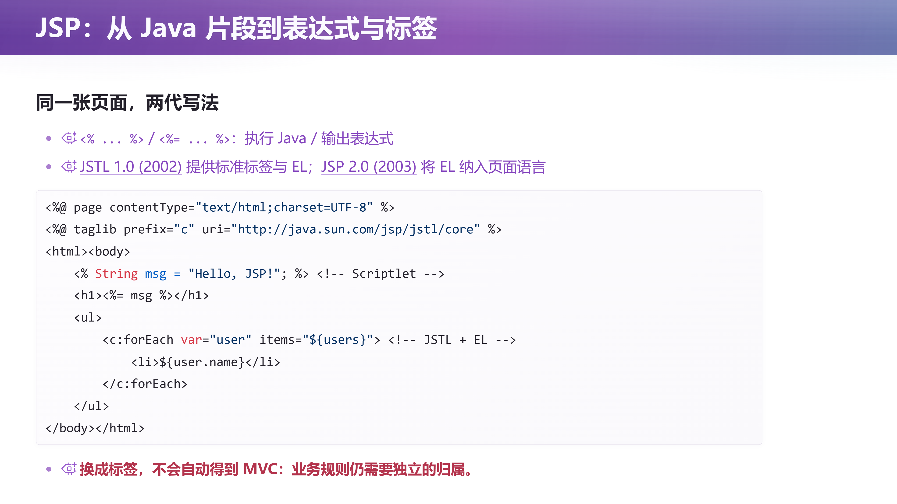
📷 JSP：从 Java 片段到表达式与标签
回到原视频 (01:08:41)
这在当时是非常直接、实用的改进：页面仍然长得像页面。但"能直接写进去"，也意味着业务规则很容易被顺手塞进页面：学生选课页检查一次课程容量，管理员补选页再写一次，批量导入又补一份；以后再改容量规则，就要找到所有入口。把脚本换成标签，也不会自动得到 MVC——业务规则仍然需要独立的归属。
7.4 MVC：让不同的变化各有归属
(参考时间: 01:10:40)
MVC（Model–View–Controller） 提供了关注点分离（Separation of Concerns）的思路。它在 1979 年的早期设计中面向交互式界面：同一个业务对象，可以有不同的展示和操作方式。
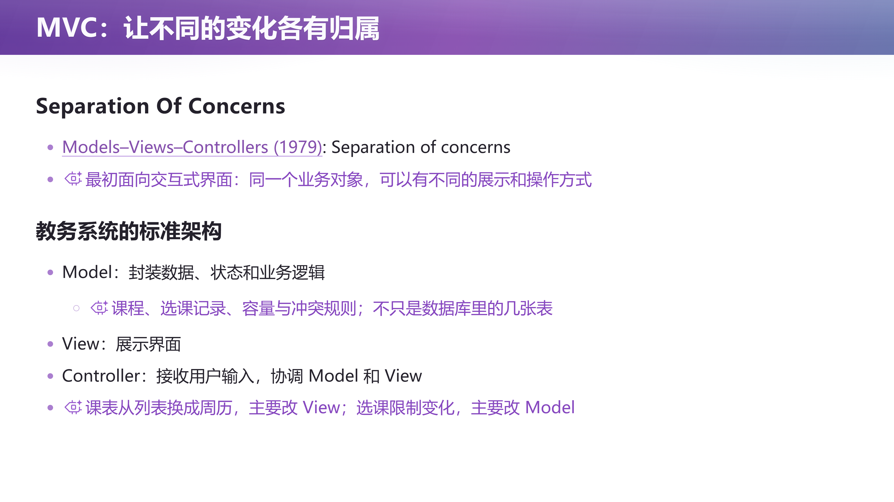
📷 MVC：让不同的变化各有归属
回到原视频 (01:10:40)
原始描述的三句话，讲者逐条读了：
- Models represent knowledge —— 它是一个 single point of the current knowledge of the world：谁选了什么课、有哪些订单。
- View 是 "a visual representation of its model" —— 所谓 View 就是我们要看到的东西，是 model 的一个 function，而且是一个 pure function。所以你不希望 View 有任何改变世界的能力。
- Controller 是 "the link between a user and the system"：它把用户的输入翻译成对 Model 的相关调用，再把输出呈现给用户。
用讲者的话总结：MVC 把"需求里可以被修改的点"翻译成 transaction，把"你看到的东西"变成状态的一个投射——非常干净的一个架构，因此它会自然而然地成为任何信息系统的标准架构。
在教务系统里就是：
- Model：课程、选课记录、容量与冲突规则——不只是数据库里的几张表；
- View：你看到的那个页面；
- Controller：你点的各种按钮、输入框，接上以后进入一个数据库事务。
于是变化有了归属：课表从列表换成周历，主要牵涉展示方式（View）；选课限制变化，主要牵涉业务规则（Model）；新增管理员补选入口，则应复用已有业务能力，并显式表达它与普通选课不同的授权规则。同一项业务决定无需散落在每个页面里，理解界面时也不必同时展开所有数据库和业务细节。
7.5 一次选课请求
(参考时间: 01:12:47)
Web MVC 中的业务流程与界面非常清晰：Controller 组织请求，Model 执行业务规则，View 呈现结果。
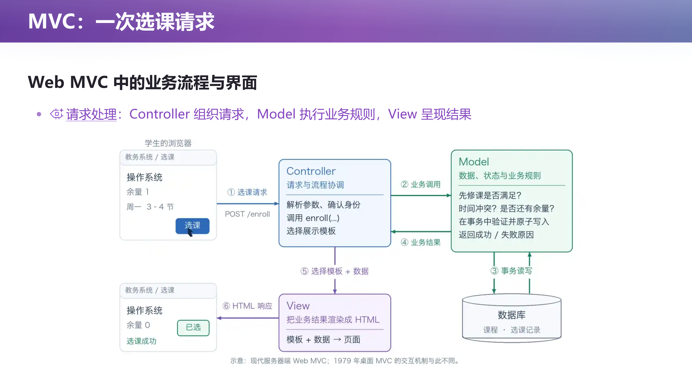
📷 MVC：一次选课请求
回到原视频 (01:12:47)
graph LR
U["学生<br/>点击"选课""] --> C["Controller<br/>接收输入 · 组织请求"]
C --> M["Model<br/>课程 · 选课记录<br/>容量 / 时间冲突规则"]
M --> C
C --> V["View<br/>呈现成功结果或失败原因"]
V --> U
style C fill:#1f3a5f,stroke:#4a90d9,color:#e8f0fb
style M fill:#3d2f1f,stroke:#d9a44a,color:#fdf3e3
那这有什么问题呢？
如果你处在"HTML 单页面、每次点按钮页面都重新刷新"的模式，那 MVC 是成立的。 但在今天的界面上，有大量元素的状态是不在这个 Model 里的：随时可以展开的菜单、搜索框、hover 的元素……这些信息通常不进入业务数据库，却仍然是程序需要管理的状态。这个问题，下一章来解。
8. 界面状态也是状态：MVVM 与 React
(参考时间: 01:13:13)
8.1 把 ViewState 也当成 Model
(参考时间: 01:13:13)
讲者用教务系统的搜索框来说明这个割裂：
- 假设 View 是一个学生列表，上面一定有个搜索框——我要找哪个名字的同学、哪个学号；
- 教务系统讨厌的地方在于，它把搜索做成了一个 database transaction：我先在搜索框输入，输入完了点搜索，它再把结果返回给我；
- 但很多时候，列表其实已经在视图里了，我只需要一个过滤器——它根本不涉及任何 Model 状态的改变，也不会再去查 Model；
- 还有那些临时的、hover 的修改：鼠标移过一个元素，它应该亮起来，这也需要一个状态，但这个状态不应该存在数据库里。
所以可以写出一个概念上的关系：
View = render(Model, ViewState)
其中 ViewState 表示界面自身的状态。
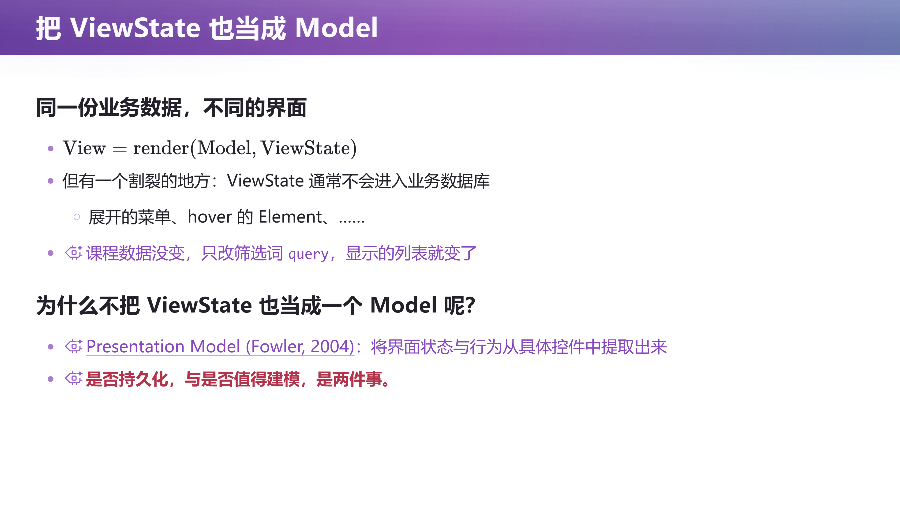
📷 把 ViewState 也当成 Model
回到原视频 (01:13:13)
这就引出 Fowler 在 2004 年提出的 Presentation Model：把界面状态与行为从具体控件中提取出来。一句很关键的判断是：
是否需要持久保存，与是否值得认真建模，是两件事。
如果把这部分信息藏在各个控件和事件回调里，程序员仍然要记住"点这里之后，要顺手改那三个地方"。
8.2 MVVM：让界面绑定状态
(参考时间: 01:14:45)
MVVM（Model–View–ViewModel） 把面向展示的状态和行为进一步组织成 ViewModel。用课程筛选理解它很直观：
- Model：课程数据；
- View：筛选框与课程列表；
- ViewModel：筛选词
query、派生列表visibleCourses及相关行为。
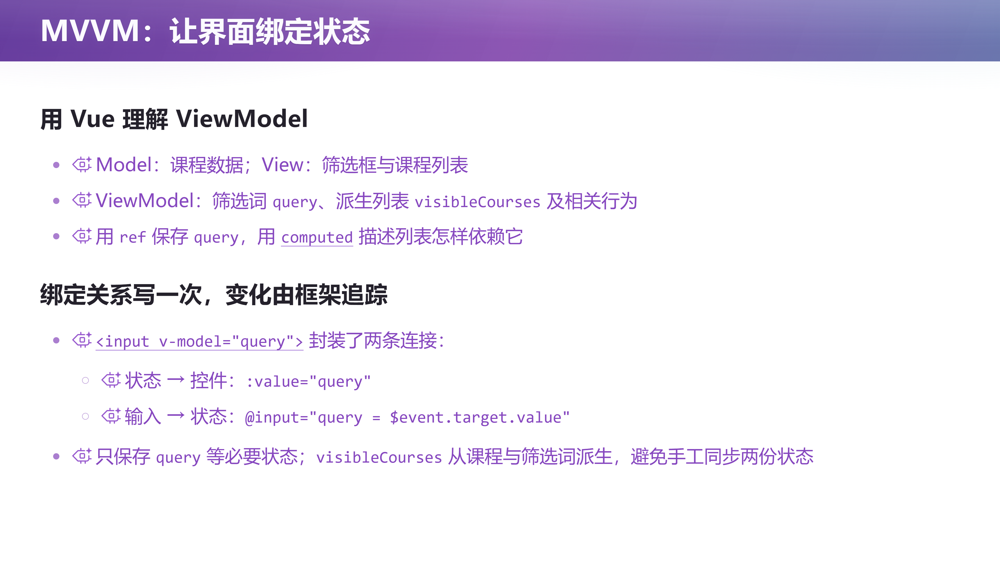
📷 MVVM：让界面绑定状态
回到原视频 (01:14:45)
用 Vue 来理解就是：
- 用
ref保存query； - 用
computed描述"可见课程由课程列表和筛选词计算而来"——它会追踪自己读到的响应式依赖，并在相关依赖变化时更新结果； - 这样就不必在每个输入事件里手工维护另一份可见课程列表。
// Vue：只保存必要状态，派生列表交给 computed
const query = ref('')
const visibleCourses = computed(() =>
courses.value.filter(c => c.name.includes(query.value))
)
输入框与筛选词之间又有两条连接：状态决定输入框显示的值，用户输入反过来更新状态。Vue 的 v-model 把这两条连接包装起来：
<!-- v-model 封装了两条连接 -->
<input v-model="query">
<!-- 等价于： -->
<!-- 状态 → 控件： :value="query" -->
<!-- 输入 → 状态： @input="query = $event.target.value" -->
所谓双向绑定，落实到这里就是明确的值传递和输入事件处理，并不意味着所有数据都可以随意双向流动。 讲者也提醒：v-model 的双向连接只针对绑定点；Vue 的组件 Props 与 React 的组件数据流，都是从父到子。
8.3 React：用状态快照描述界面
(参考时间: 01:15:19)
讲者坦承自己更偏向 React——因为 React 对开发者比较直观、也更纯净一点。React 采用另一种表达方式：组件根据当前的属性与状态描述界面，用户事件通过状态更新函数请求下一次渲染。
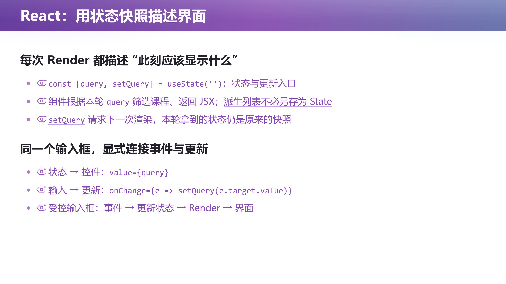
📷 React：用状态快照描述界面
回到原视频 (01:15:19)
// React：每次 Render 都描述"此刻应该显示什么"
const [query, setQuery] = useState('')
const visibleCourses = courses.filter(c => c.name.includes(query))
return (
<input value={query} onChange={e => setQuery(e.target.value)} />
)
- 组件根据本轮的
query筛选课程、返回 JSX；派生列表不必另存为 State； setQuery请求下一次渲染，本轮拿到的状态仍是原来的快照；- 输入框是受控输入框：事件 → 更新状态 → Render → 界面。
React 的设计目标，是把"我们看到的整个 DOM tree"写成一个纯函数：
DOM tree = f(state)
定义"输入当前所有界面状态、算出整棵 DOM"这件事当然是可以的，但这里有一个非常严重的性能问题：一个网页上可能有几万个元素，当 query 改变、你输入一个字符的时候，整个状态全部都要重算。所以 React 在系统里做了大量 virtual DOM 的工作，把这些复杂性藏起来——你只要按照它的模型声明"状态是什么、状态怎么变"，剩下的它帮你更新。
8.4 Vue 与 React：同一个课程筛选框
(参考时间: 01:17:30)
Vue 则更像帮你组建了一个依赖关系图：你写 :value="query"、@input=... 这样的绑定，它就建立一个依赖关系，帮你保持同步。两者其实差不多，而且随着 Vue 新版本的发布，它们好像变得更像了。
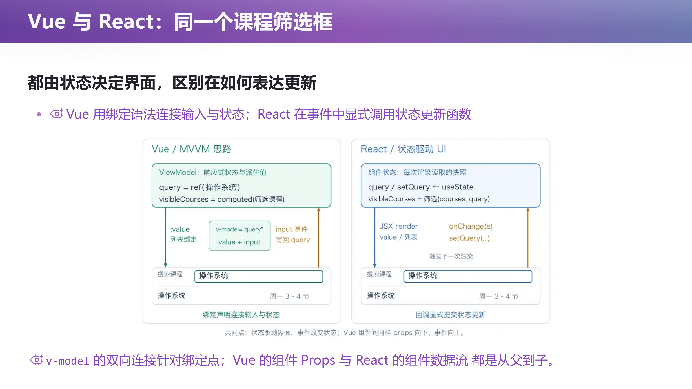
📷 Vue 与 React：同一个课程筛选框
回到原视频 (01:17:30)
但这两套框架的设计思路是共通的，都需要你隔离复杂性：
- 把变的东西和不变的东西分离开来；
- 把逻辑和数据的源头分离开来。
原因还是那句：我们是 small head，头很小。 所以：
在我们关注状态的时候，最好就不要同时关注状态是怎么变成 DOM 的；等状态完全确定以后，再看怎么把这个状态翻译成 DOM。
两个框架都由状态决定界面，界面都是一个 pure function，只是更新的模型略有不同。
9. 把复杂性放进 Model，还远远不够
(参考时间: 01:19:01)
MVC 和 CRUD 对许多信息管理功能非常有效：业务对象比较稳定，一次请求完成一小段局部操作，页面展示已有信息，再提供新增、修改或删除入口。 个人博客、课程信息查询，以及社交网络中的许多基础功能，都能从中受益。
但业务一旦跨越很长的时间，情况就变了。
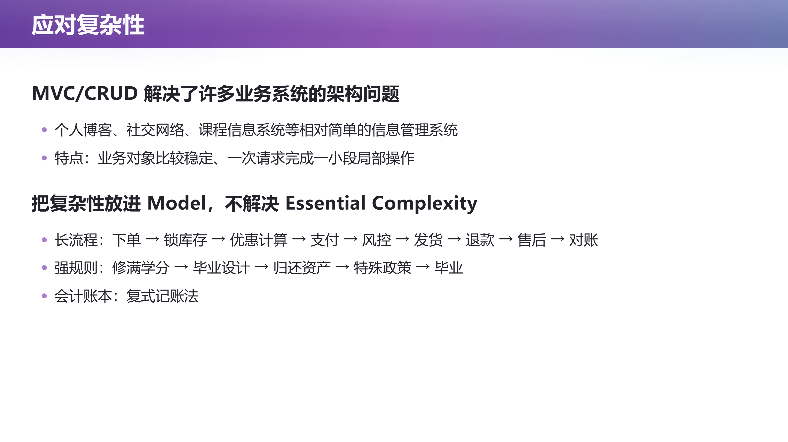
📷 应对复杂性：MVC / CRUD 解决了许多业务系统，但没有解决 essential complexity
回到原视频 (01:19:01)
9.1 长流程与强规则
长流程：电商的一笔订单可能经历——
graph LR
A["下单"] --> B["锁库存"] --> C["优惠计算"] --> D["支付<br/>（需用户确认）"]
D --> E["风控"] --> F["发货"] --> G["退款"] --> H["售后"] --> I["对账"]
style D fill:#3d2f1f,stroke:#d9a44a,color:#fdf3e3
style E fill:#3d2f1f,stroke:#d9a44a,color:#fdf3e3
任何一步失败，都可能影响前后多个环节。教务系统也一样：修满学分之后，还有毕业设计、资产归还、特殊政策与批准记录。
那么，怎么用"当前状态"表示长流程呢？ 最直接的方法是在数据库里放一张 order 表，加一列 status：1 代表下单、2 代表库存……或者把状态展开成一堆字段（'是否下单''是否支付'……）。这时这个状态机会变得非常复杂，而且你还要在某个节点上设计"触发了风控以后，如何返回"的逻辑——这本身就是 essential complexity，是业务系统里的真实逻辑。
随着业务系统越长越大，你会发现更糟的事：有的学生处于"既可以毕业、又不能毕业"的状态。 为什么会这样？
- 程序有 bug；
- 或者有一条特批，导致本来该由风控触发的某个地方被 override 了——风控被另一个人 override 了；
- 系统里错综复杂的逻辑最终使它处于一个"风控失败"的状态，却进入了下一个环节。
那这个数据到底是什么呢？你怎么解读它？ 这种不一致的数据，有时甚至是 silently corrupt（静默损坏） 的。讲者说：我相信我们学校的教务系统里有无穷多这样不一致的数据——因为经常要"手操"，手操教学里很多数据根本就不对；但反正最后好像没影响这位同学毕业，于是也就只能不管了。
根源在于：我们的业务流程可能是一整条很长的流程，它既要编码过去、又要编码现在、又要编码未来。本质上，当前状态是一个快照；但这个快照是由过去推演过来的。而"它是怎么过来的"这个信息一旦丢了，不一致就会变得非常复杂。
10. 把过去、现在和未来分开
10.1 复式记账：同一笔业务，保持会计等式
(参考时间: 01:23:08)
讲者先用一个更简单的例子切入：记账。
支付宝会给你一个记账，但如果你想要真正严肃的记账，会计实际上有一个要求，叫做复式记账法（double-entry bookkeeping）。它是为了防错——为了防止数据库不一致：当发生不一致的时候，它能够检查出来。
它的规则是：每一笔交易都同时计入两个或以上的账户，且金额相等、方向相反。
- 如果只记一条，简单，但无法反映业务的完整结构，也不具备自 balancing 的校验能力；
- 复式记账可以试算平衡。
人类发明这种东西，正是因为"一个当前状态很可能是 corrupted、是不对的"——所以要把"它为什么不对"在一定程度上找出来。
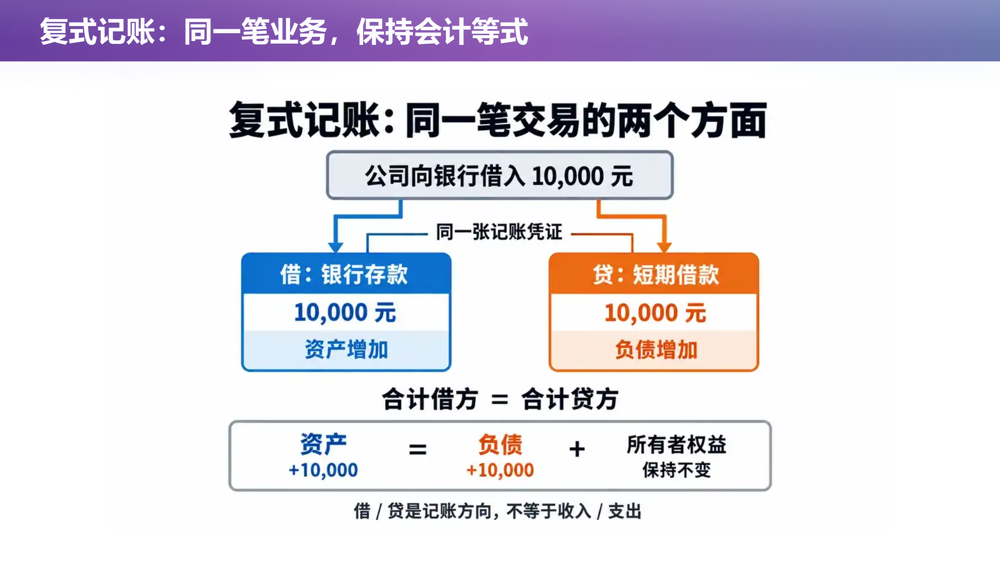
📷 复式记账：同一笔业务，保持会计等式
回到原视频 (01:23:25)
会计等式是：
资产 (Assets) = 负债 (Liabilities) + 所有者权益 (Equity)
这里要特别注意："借""贷"是记账方向，不能简单理解为日常语言里的借入和借出。 一笔借款到账，银行存款（资产）增加，同时债务（负债）也增加；归还其中一部分本金，存款和债务相应减少。这些变化共同维持着"资产 = 负债 + 所有者权益"的关系。
但算得平不等于记得对。 复式记账提供了可检查的约束，但把业务归错类、重复录入一笔金额相同的借贷记录，都可能仍然平衡。原始凭证、业务含义和记账动作之间的对应关系，仍然需要核对。
10.2 记账架构：Event Sourcing 与 LLM as a Compiler
(参考时间: 01:25:31)
讲者说：我对会计没有任何知识。 但我有一个记账需求，要得到一张符合会计法规的资产负债表（现金、存货、固定资产、应付账款、短期借款、所有者权益……）。在我没有任何领域知识的情况下，怎么设计一个好的信息系统？
他用的就是 event sourcing（事件溯源）：不再记录当前的状态，而是记录所有状态的迁移。 说白了，他做的是一笔流水账——"今天收了 1000 块、明天减了 1000 块，以及为什么"。
他没有去设计那个数据库，而是直接让 AI 设计了一个"小的、像编译器一样的东西"：
- 从最终要交付的资产负债表所有可能的条目里，提取出一组记账动作；
- 每发生一笔业务，就用这组动作去描述："货币资金会怎么样、所有者权益会怎么样、应付款会怎么样，现金流量表上会发生什么"。
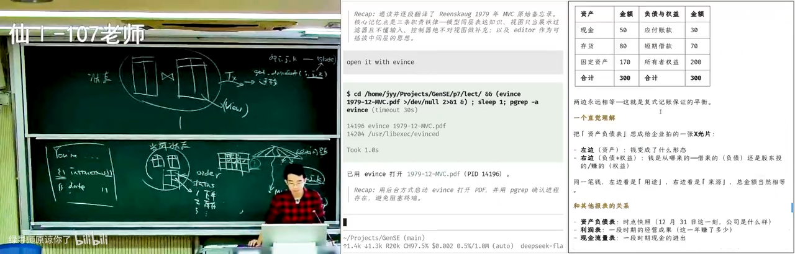
📷 会计规则表：每一种记账动作如何影响各张报表
回到原视频 (01:25:03)
这些表格完全是 AI 生成的。 讲者的选择是：选择相信 AI，以及相信最终的校验能找出问题。
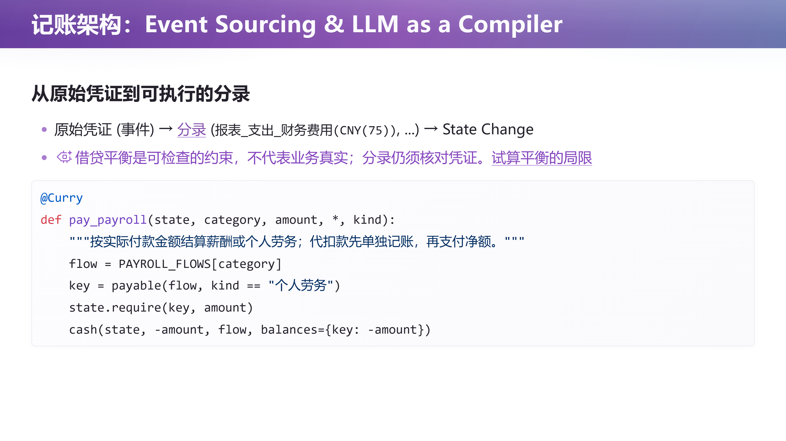
📷 记账架构：Event Sourcing & LLM as a Compiler
回到原视频 (01:25:31)
然后就是核心的架构：LLM as a Compiler。
- 有一份 persistent history（持久、不可篡改的历史）：记录"发生了什么"。比如要允许一位不能毕业的同学毕业，也必须在这里写一条持久记录——"我要允许谁谁谁毕业"；
- 这样的流水账条目，会用 LLM 编译成许多小的操作；
- 当前的状态，是由所有操作 reduce 得到的——每个操作都说明资产负债表要怎么改、第二张表要怎么改、现金流量表要怎么改；把它们 reduce 一遍，就得到当前可以提交出去的资产负债表。
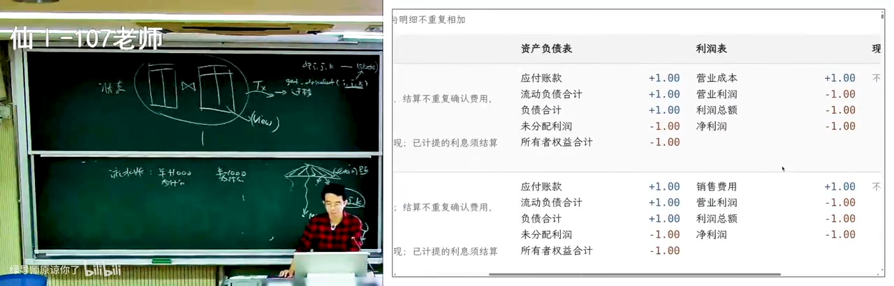
📷 AI 生成的记账动作与报表推导
回到原视频 (01:27:11)
里面还有很多小的架构。比如 GPT 一开始写的代码非常糟糕、非常非常长，讲者就用了一个小 trick：给函数加上参数、把 state 确定下来，得到一个 curry 之后的函数——这是函数式编程里非常常用的小技巧。好处就是：记账不再有任何问题，一笔业务在报表上的所有 side effect 都会被体现出来，按时间顺序推一遍，就得到当前的报表。
教学材料里给出的一个 payroll 实现片段是这样的（它依赖项目内的金额类型、分类表和账本操作，不能脱离这些定义单独运行）：
@Curry
def pay_payroll(state, category, amount, *, kind):
"""按实际付款金额结算薪酬或个人劳务；代扣款先单独记账，再支付净额。"""
flow = PAYROLL_FLOWS[category]
key = payable(flow, kind == "个人劳务")
state.require(key, amount)
cash(state, -amount, flow, balances={key: -amount})
Mermaid 图不好画 decorator，但架构是这样的：
graph LR
H["Persistent History<br/>发生了什么（不可篡改）"] --> C["LLM as a Compiler<br/>把条目编译成一组记账动作"]
C --> OP["记账动作<br/>报表_支出_财务费用(CNY(75)) 等"]
OP --> R["reduce：按规则执行状态变化"]
R --> S[("当前状态<br/>资产负债表 · 利润表 · 现金流量表")]
S --> AU["人工审核 / 试算平衡校验"]
AU -. 发现错误 · 修正动作（代价很小） .-> C
style C fill:#1f3a5f,stroke:#4a90d9,color:#e8f0fb
style H fill:#3d2f1f,stroke:#d9a44a,color:#fdf3e3
模型在这里像一个编译器前端：把人的材料（原始凭证、发生的业务）翻译成系统可以检查和执行的表示。例如 报表_支出_财务费用(CNY(75)) 表达的是一项具体记账动作，CNY 则把金额放进"人民币的金额表示"里。语言模型负责提出符合材料的动作，账本代码负责这些动作的确定含义和约束；编译出来的动作是否符合真实业务，仍然是需要审查的环节。
10.3 从分录到报表
(参考时间: 01:28:38)
📷 从分录到报表
回到原视频 (01:28:38)
举个具体的例子。银行收支记录包含两笔动作：
- 财务费用支出 75 元；
- 投资收益中的利息收入 22.07 元。
执行之后：
- 货币资金的净变化是
22.07 - 75 = -52.93元； - 利润表上相应记录费用与收益，净利润减少 52.93 元；
- 相关权益和现金流量项目，也按这套工具的规则得到结果。
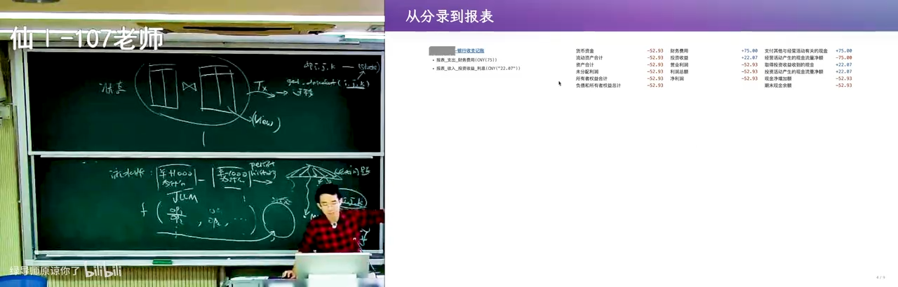
📷 从分录到报表：报表上的许多数字共同变化，但它们来自同一组动作
回到原视频 (01:29:19)
报表上的许多数字共同变化，但我们不希望让模型逐格填写这些数字，而希望它们来自同一组动作及其计算规则。
10.4 记账为什么麻烦？"当前状态"编码了过去、现在与未来
(参考时间: 01:29:49)
回到信息系统：如果你用数据库去管理信息，那你的数据库很自然管理的就是"现在"：
- 现在学校里的状态是什么；
- 每一个学生是什么；
- 这个学期有哪些课程。
它代表一个当前的事实。而这个状态是可变的——状态可变就意味着：一旦你的逻辑有错、或者逻辑改变，状态就很容易造成不一致，你就会从一个对的状态走到一个错的状态。
📷 记账为什么麻烦？"当前状态"同时编码了过去、现在和未来
回到原视频 (01:29:49)
而"当前状态"这种表示，往往同时背负着三样东西：
- 过去：合同签订过；
- 现在：正在等待打款；
- 未来：货物交接、潜在的坏账……
如果只盯着当前余额和一个状态字段，很多不同的历史就会被压进同一种表示中，很多尚未发生的预期又会与已经发生的事实混在一起。
10.5 Event Sourcing 和复杂性分解
(参考时间: 01:30:44)
Event Sourcing 提供了一种重新分解问题的方法：保存已经发生的事件，再从事件计算需要的状态。
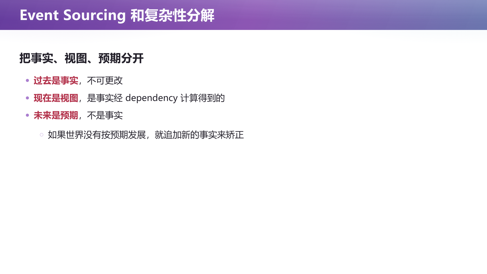
📷 Event Sourcing 和复杂性分解
回到原视频 (01:30:44)
它把三样东西分开了：
- 过去是事实——发生过什么，例如某笔支付已经完成、某项费用已经确认，不可更改；
- 现在是视图——是事实经过 dependency 计算得到的；
- 未来是预期——不是事实。如果世界没有按预期发展，就追加新的事实来矫正。
这里有一个关键区分："发生了什么"（事件）与"希望接下来怎么样"（命令或预期）应当分开。 当前状态由历史事实逐步处理得到，也可以为了查询效率保存计算结果。
在这种架构中，如果事情没有按预期发展，就追加新的事实来解释变化；之前记录错了，也可以记录更正、撤销或冲销，让系统保留"发生过什么、后来为什么改变"的线索。
"过去不可更改"的含义，是不靠悄悄抹掉历史来解释今天的状态。
比如，先前预计一笔应收款会收到，后来确认无法收回——这个结果不应使"曾经形成过应收"以及后续处理过程从历史中消失，而是按规则用新的事实改变当前的计算结果。同样，"已经支付又发生退款"与"从未支付过"，虽然可能有相同的净现金变化，却不是同一段业务历史。
从状态一致性到"反悔"的成本，这里体现得最清楚。 在"当前状态"的数据库里，如果过去的规则改了，你就要为状态生成一个补丁——而数据库迁移是一个非常危险的操作。讲者举了一个教务系统的例子：
某位同学想把卷面分"要回来"，老师查了卷子，结果发现当时最后一道题空着还给了 20 分，于是只能把分数扣掉——这位同学挂了。
挂了以后，对数据库就是一次摧毁性的修改：这门课的学分要减一；学分数又会影响"能不能毕业""能不能准出""能不能选下一门课"。
你已经选上了操作系统（它的先修是计算机系统基础），现在计算机系统基础挂了——你还能选操作系统吗？
它内部天生就是不一致的。
本质复杂性里有大量这样的依赖关系：我依赖你、你依赖我。如果是一个"当前状态的数据库"，把成绩从 1 改成 0，你到底对数据库剩下的部分做了什么，你很难评估，也很容易漏掉。
所以为什么要用 event sourcing？它说：你不要维护一个当前状态，而要搞清楚所有原始数据之间的 dependency。
- LLM 从记账条目编译到操作也可能出错，但错了以后，只要有人工审核，把翻译改正过来就可以了，不会付出任何代价；
- 反过来，当你改动一个事实（比如某位同学从"通过 ICS 课"变成"不通过"）时，因为你不维护当前状态、你手上握着所有的计算，你可以把这个计算重新全部做一遍。
你哪怕用一个自动的数据流分析，都知道"这个从通过到不通过，可能会影响哪些结论"——因为 data flow 被 make explicit 了，而不是以状态的形式藏在那个当前状态里。
Event Sourcing 还带来一个很好玩的特点：它是 replay based 的——当前状态完全由过去决定，所以你可以用它来推演未来的状态。
graph LR
E["过去的事实<br/>（事件，不可篡改）"] --> R["按规则 reduce / replay"]
R --> N["现在的视图<br/>当前状态"]
R -. 在某个位置推演 .-> F1["如果风控成功 → 状态 A"]
R -. 在某个位置推演 .-> F2["如果风控失败 → 状态 B"]
F1 --> EV["评估：会不会破产？概率多少？"]
F2 --> EV
style N fill:#1f3a5f,stroke:#4a90d9,color:#e8f0fb
style EV fill:#3d2f1f,stroke:#d9a44a,color:#fdf3e3
比如一个流程是"下单 → 锁库存 → 优惠计算 → 支付"，我现在正卡在"支付"上，那么我可以直接从这个位置推演出：
- 如果风控成功，状态会到什么样？
- 如果风控失败，状态又会怎么样？
也就是说，如果我有一个账本，就可以在 event sourcing 的基础上评估"我到底会不会破产、破产的概率有多少"——只要我有个模型、只要我知道"应收账款有多少回不来"，我就能对未来做这样的评估。这都是一个好的架构所能够带来的。
为什么 event sourcing 在解决这些问题时会显得稍微好一些？ 它没有办法消除这些 essential complexity——先修课程的依赖关系、毕业的依赖关系，这些都是事实已经存在的。但是：
event sourcing 把"事实、视图、预期"分开了。
如果世界没有按照你的预期发展，你追加一条新的事实就可以了——不需要让工程师去手改一个数据库，然后让这个数据库进入越来越糟糕的状态。比如讲者调侃：如果领导认为"这个同学就是可以毕业，其他所有东西都不管了"，那也追加一条事实；因为有 override，所以他可以毕业。
跳出问题看问题，就一句话：
现在是过去的结果。
于是你有一个可查证、可溯源的计算过程，你就显式地建模了系统里各种各样的 data dependency。所有的计算逻辑都是可以溯源的：计算机系统基础课的学分可能是变的，但只要你有 event sourcing，你就知道"在当前这个时刻，计算机系统基础课的学分是几"——你就不会出现"确实减了学分，那你学分还够不够毕业"这种无从下手的问题。
11. 教务系统：让毕业结论有一条可追溯的计算路径
(参考时间: 01:33:26)
11.1 显式建模 Data Dependency
把同样的想法带回教务系统，就能看见一个熟悉的问题。数据库里可能同时存着：
- 成绩记录；
- 已修课程列表；
- 总学分；
- 各类别学分；
- "是否满足毕业条件"。
如果把这些都当作可以各自修改的独立事实，那么更正一门课的成绩时，就必须记得去修改后面的每一项。遗漏一处，系统里便同时存在几个互相矛盾的"现在"。
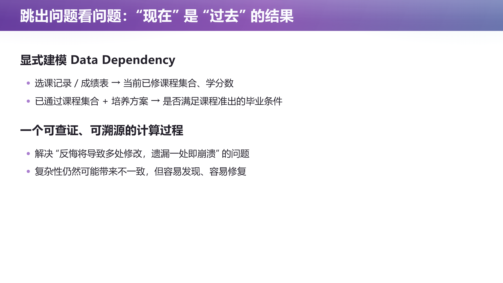
📷 跳出问题看问题："现在"是"过去"的结果，显式建模 data dependency
回到原视频 (01:33:26)
其实，其中许多状态本来就是别的信息的结果。 这是一条显式的数据依赖链：
graph TD
A["选课记录 / 成绩 / 认定记录"] --> B["当前通过了哪些课程"]
B --> C["加上去重 / 替代 / 分类规则"]
C --> D["各类学分"]
D --> E["结合适用的培养方案"]
E --> F["课程准出条件是否满足"]
G["毕业设计 / 资产归还 / 特殊政策与批准记录"] --> H["各自明确的判断"]
F --> I["毕业结论"]
H --> I
style B fill:#1f3a5f,stroke:#4a90d9,color:#e8f0fb
style I fill:#3d2f1f,stroke:#d9a44a,color:#fdf3e3
事实与规则作为输入，逐层产生结果。每个结论都可以追问："依据哪些数据，经过哪个计算得到？"
- 假设某门必修课的成绩经过复核，从"不通过"更正为"通过"：我们希望系统记录这次更正、重新计算受影响的已通过课程、学分和审核结论，并能解释为什么发生变化；
- 如果某门交换课程只能计入一个类别，或者两门交换课程合抵一门必修课，就应让认定记录和对应规则参与计算，而不是在总学分字段上直接加一个数字了事；
- 经过批准的特例也要有自己的位置：某个学生获得了课程替代或条件豁免，应当保存批准对象、适用范围和依据，使后续计算可以使用它。
否则，一个没有来由的"审核通过"，只是在隐藏复杂性——下一次重新审核时，系统仍然不知道为什么要通过。
发生"反悔"时，不再靠人到处寻找需要手工修改的副本，而是沿依赖关系重新得到派生结果。当然，计算规则仍可能有错误、派生结果的更新也可能暂时滞后；区别在于，我们保留了查证与修复所需的依据。
有一句要特别留意："课程条件满足"不能悄悄被当成"所有毕业条件都已满足"。 毕业设计、资产归还等其他要求，应当进入各自明确的判断。
12. 从状态一致性问题，转向计算正确性问题
12.1 SQL 的 Billion Dollar Mistake
(参考时间: 01:37:56)
看到这里，可以对 SQL 提出一个带点挑衅的批评：它没有把跨数据的任意计算关系，充分作为一等公民（first-class citizen）来表达和维护。 这也算一个 "Billion Dollar Mistake" 吧。
编者说明："Billion Dollar Mistake" 是 Tony Hoare 对自己发明空指针（null pointer）的自嘲——空指针让程序 crash，甚至可能让火箭爆炸。讲者在这里是借这个说法来调侃关系数据库的一个设计取向。
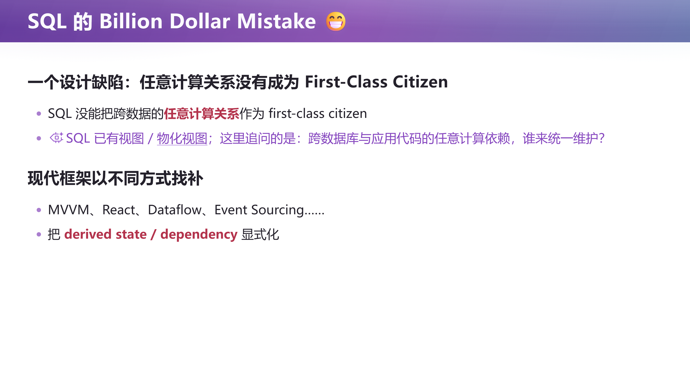
📷 SQL 的 Billion Dollar Mistake
回到原视频 (01:37:56)
所谓一等公民，是说这类关系应当成为可以直接声明、组合、检查和追踪的对象，而不只是散落在应用代码里的一些约定。
SQL 当然能够表达查询，数据库也有视图、约束和物化视图；例如 PostgreSQL 的物化视图可以保存查询结果，并通过刷新重新生成。这里批评的焦点是：跨过数据库、应用逻辑、缓存乃至界面的计算依赖——一条基础记录变了，所有依赖它的结果由谁负责更新，怎样判断哪些结果已经失效，又怎样追溯一个结果的来源？
具体到教务系统：学生表里有一个"能不能毕业"的 0/1 字段，数据库几乎都会这样设计——因为你需要快速地把它查询出来。但它不能用关系代数去建模一个非常复杂的计算。于是这个 0 和 1，就成了数据库里一个潜在的不一致点。
现代框架用各种不同的方式在"找补"：
- MVVM：把面向展示的状态与行为提取出来；
- React：让界面从状态派生；
- Dataflow：把数据之间的计算关系组织为流动和依赖；
- Event Sourcing：让当前状态从历史事实派生。
它们所处的层次和具体机制各不相同，但都在尝试把"这个结果依赖什么"（derived state 与 dependency）显式化。把它们放在一起，是一种理解架构的视角，不是在断言它们都因 SQL 的某个缺陷而诞生。
12.2 保存 Source of Truth
(参考时间: 01:38:45)
由此得到一个很有力量的设计原则：
系统应保存足以重建其余信息的事实依据（source of truth），其他状态尽可能成为计算的结果。
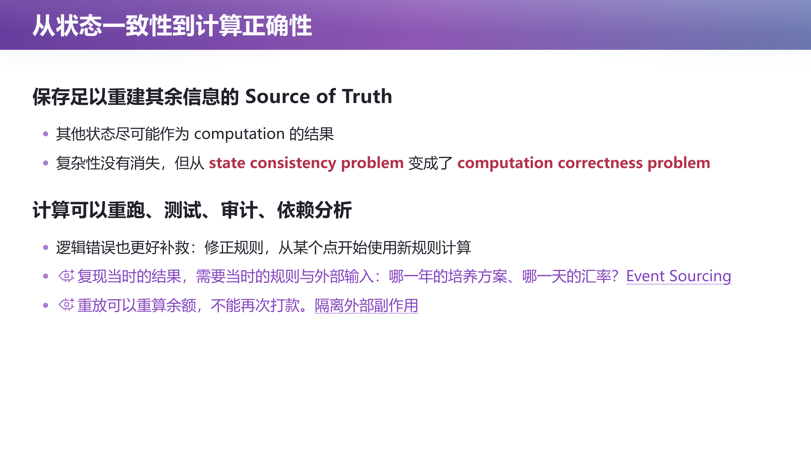
📷 从状态一致性到计算正确性
回到原视频 (01:38:45)
为了性能，可以保存汇总、索引和缓存，但应当清楚它们从哪里来、何时失效，以及怎样重建。一个业务决定如果必须由人作出，就把决定及其依据保存下来；能够推导的东西，则尽量不要再引入一份独立的决定。
复杂性仍然存在，却从"怎样保证许多份状态永远一致"，转移到了"这段计算是否正确"。 而后一个问题往往更容易管理：
- 给定输入可以重跑；
- 可以写有意义的测试；
- 可以审计计算步骤；
- 可以分析依赖。
发现旧规则有错误时，也有机会修正规则，在明确的适用范围和时间边界内重新计算，而不是对着一堆已经失去来源的数字逐个打补丁。
重算能力还有两个具体前提：
- 要复现当时的结果，就必须知道当时使用的规则和外部输入——例如哪一版培养方案、某次计算采用的汇率，而不能偷偷换成今天的数据；
- 重放账本可以重新计算余额，却不能把已经完成的付款再执行一次——对外部世界的动作，需要与内部状态重建区分开来。Fowler 对事件溯源的讨论也专门分析了外部查询与外部更新带来的这两类问题。
12.3 对生成式软件工程的意义
对生成式软件工程而言，这种转移尤其重要。
让 AI 面对散落各处的隐含同步要求，它就需要反复猜测"哪些地方必须一起改"；而把事实、规则和依赖表达清楚之后，生成与检查才有了共同的对象。
代码越容易生产，我们越有理由认真选择这种表示——让系统中的每一个重要结果，都能回答：
"我是怎样算出来的？"
附：官方参考与延伸阅读
以下链接来自本讲官方讲义（lect7.md），按对应章节列出。
第 1—3 章（驾驭复杂性 / 阅读经典 / 解空间）
- E. W. Dijkstra：Notes on Structured Programming（EWD249） —— "On our inability to do much"、mental aids 与珍珠项链比喻的原文。
- Dahl、Dijkstra、Hoare：Hierarchical Program Structures —— 类、对象与协程（子程序 vs. 协程）、Concept Hierarchies（§7）的原文。
- Guy L. Steele Jr.：Growing a Language（OOPSLA'98 Keynote） —— "设计一种模式比设计一个东西更难、也更好"；扩展作为一等公民。
- Scheme R7RS · Common Lisp: The Language · Java Language Specification —— Steele 参与创造的抽象工具。
第 4 章（UNIX）
- POSIX：Utility Conventions —— 选项、操作数、
--结束选项解析等命令行约定。 - POSIX Shell Command Language —— 管道、stdin/stdout/stderr 与退出状态。
- jq 手册 · fzf · xdotool —— 现代工具如何继续扩展组合的边界。
第 5—6 章（关系数据库 / Internet）
- E. F. Codd：A Relational Model of Data for Large Shared Data Banks（1970） —— 数据独立性与关系模型。
- RFC 1958：Architectural Principles of the Internet（1996） —— "唯一永存的原则是变化本身"、城市类比。
第 7—11 章（MVC / MVVM / React / 记账 / 教务）
- Oracle：JSP 与 Java Web 技术 —— 模板页面与 Servlet 的关系。
- Trygve Reenskaug：MVC（1979） —— Separation of Concerns 的早期设计原文。
- Vue：计算属性 · Vue：表单输入绑定 ——
computed与v-model的两条连接。 - React：Thinking in React · React：State as a Snapshot —— 派生列表不必另存为 State、状态是每次渲染的快照。
- OpenStax：复式记账的初始步骤 —— 借贷方向与会计等式。
- 课堂案例：记账规则表 —— 各类记账动作怎样影响资产负债表、利润表和现金流量表。
- Martin Fowler：Event Sourcing —— 事实/视图/预期的分离，以及外部查询与外部更新带来的重放陷阱。
- PostgreSQL：物化视图 —— 保存查询结果并刷新重生成。
后记：本书是如何生成的
本书由 B 站 AI 字幕（ai-zh，覆盖率 100%、2379 段、总时长约 99 分 41 秒）经 AI 重构而成：口语转书面语、按内容自身逻辑重新分章，并配以 Mermaid 图与截图卡片。
截帧管线使用已登录的浏览器，逐个 seek 到锚点时间、隐藏播放器 UI、锁定顶码率流后截取纯视频帧；随后与课程官方资料（course/ 目录）对齐：讲义用于术语校准、章节骨架对齐与参考链接补全；说明书中的"幻灯片画面"直接引用官方幻灯片的 4K 渲染图（course/slides/），只有现场演示/屏幕画面使用视频帧。经 course_assets.py --audit 校验，本讲 39 页官方幻灯片在书中各恰好出现一次。
一句话总结本讲：好的架构不是选出一个解，而是设计一片解空间；当需求、规则和世界都会变化时，与其维护一份随时可能损坏的"当前状态"，不如保存足以重建其余信息的事实依据，让"现在"成为"过去"经过可查证、可重跑的计算得到的结果。
与视频逐句对照的订正稿见 transcript.corrected.txt：先由脚本按本讲错词 MAP 修正明显的 ASR 识别错误，再由 AI 通读全文做一轮行级订正（保留讲师原始字词与有意重复，仅修明显识别错误）。
本电子书由 videobook 流水线生成。课程讲义与幻灯片版权归讲师 © 蒋炎岩 所有，依 CC BY-NC 4.0 发布。